Learning Module 1 Portfolio Risk and Return: Part I - Part 3: The Power of Diversification
Volume 9: Portfolio Management
Learning Module 1 Portfolio Risk and Return: Part I
Part 3/4: The Power of Diversification (PDF Pages 41–56)
Tập 9: Quản lý Danh mục Đầu tư (Portfolio Management)
Học phần 1: Rủi ro và Lợi nhuận Danh mục Đầu tư: Phần I (Portfolio Risk and Return: Part I)
Phần 3/4: Sức mạnh của Đa dạng hóa (The Power of Diversification) (Trang PDF 41–56)
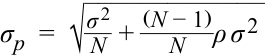
The first term under the root sign becomes negligible as the number of assets in the portfolio increases leaving the second term (correlation) as the main determining factor for portfolio risk. If the assets are unrelated to one another, the portfolio can have close to zero risk. In the next section, we review these concepts to learn how portfolios can be diversified.
Số hạng đầu tiên dưới dấu căn trở nên không đáng kể khi số lượng tài sản trong danh mục đầu tư tăng lên, để lại số hạng thứ hai (hệ số tương quan) là yếu tố quyết định chính đối với rủi ro của danh mục đầu tư. Nếu các tài sản không có mối liên hệ nào với nhau ($\rho = 0$), danh mục đầu tư có thể có mức rủi ro gần như bằng không. Trong phần tiếp theo, chúng ta sẽ xem xét lại các khái niệm này để tìm hiểu cách thức đa dạng hóa danh mục đầu tư.
THE POWER OF DIVERSIFICATION
SỨC MẠNH CỦA ĐA DẠNG HÓA (THE POWER OF DIVERSIFICATION)
describe characteristics of the major asset classes that investors consider in forming portfolios
mô tả đặc điểm của các nhóm tài sản chính (major asset classes) mà nhà đầu tư xem xét khi hình thành danh mục đầu tư
describe the effect on a portfolio’s risk of investing in assets that are less than perfectly correlated
mô tả tác động lên rủi ro của danh mục đầu tư khi đầu tư vào các tài sản có tương quan nhỏ hơn mức tương quan hoàn hảo (less than perfectly correlated)
Diversification is one of the most important and powerful concepts in investments. Because investors are risk averse, they are interested in reducing risk preferably without reducing return. In other cases, investors may accept a lower return if it will reduce the chance of catastrophic losses. In previous sections of this reading, you learned the importance of correlation and covariance in managing risk. This section applies those concepts to explore ways for risk diversification. We begin with a simple but intuitive example.
Đa dạng hóa (diversification) là một trong những khái niệm quan trọng và mạnh mẽ nhất trong đầu tư. Bởi vì các nhà đầu tư là những người ngại rủi ro, họ luôn quan tâm đến việc giảm thiểu rủi ro mà tốt nhất là không làm giảm lợi nhuận. Trong những trường hợp khác, các nhà đầu tư có thể chấp nhận mức lợi nhuận thấp hơn nếu điều đó giúp làm giảm khả năng xảy ra những khoản lỗ thảm khốc (catastrophic losses). Trong các phần trước của bài đọc này, bạn đã tìm hiểu về tầm quan trọng của hệ số tương quan (correlation) và hiệp phương sai (covariance) trong việc quản lý rủi ro. Phần này áp dụng các khái niệm đó để khám phá những cách thức đa dạng hóa rủi ro. Chúng ta bắt đầu bằng một ví dụ đơn giản nhưng trực quan.
EXAMPLE 6
VÍ DỤ 6
Diversification with Rain and Shine
Đa dạng hóa với Mưa và Nắng (Diversification with Rain and Shine)
Assume a company Beachwear rents beach equipment. The annual return from the company’s operations is 20 percent in years with many sunny days but falls to 0 percent in rainy years with few sunny days. The probabilities of a sunny year and a rainy year are equal at 50 percent. Thus, the average return is 10 percent, with a 50 percent chance of 20 percent return and a 50 percent chance of 0 percent return. Because Beachwear can earn a return of 20 percent or 0 percent, its average return of 10 percent is risky.
Giả sử một công ty có tên là Beachwear chuyên cho thuê thiết bị bãi biển. Tỷ suất sinh lợi hàng năm từ hoạt động kinh doanh của công ty là 20% vào những năm có nhiều ngày nắng nhưng giảm xuống mức 0% vào những năm mưa nhiều với ít ngày nắng. Xác suất của một năm nắng nhiều và một năm mưa nhiều là bằng nhau ở mức 50%. Do đó, tỷ suất sinh lợi trung bình là 10%, với 50% cơ hội đạt lợi nhuận 20% và 50% cơ hội đạt lợi nhuận 0%. Bởi vì Beachwear có thể kiếm được lợi nhuận 20% hoặc 0%, nên tỷ suất sinh lợi trung bình 10% của nó có rủi ro.
You are excited about investing in Beachwear but do not like the risk. Having heard about diversification, you decide to add another business to the portfolio to reduce your investment risk.
Bạn rất hào hứng với việc đầu tư vào Beachwear nhưng lại không thích rủi ro đó. Sau khi nghe nói về sự đa dạng hóa, bạn quyết định bổ sung thêm một doanh nghiệp khác vào danh mục đầu tư để giảm thiểu rủi ro đầu tư của mình.
- There is a snack shop on the beach that sells all the healthy food you like. You estimate that the annual return from the Snackshop is also 20 percent in years with many sunny days and 0 percent in other years. As with the Beachwear shop, the average return is 10 percent.
- Có một cửa hàng đồ ăn nhẹ trên bãi biển (Snackshop) chuyên bán tất cả các loại thực phẩm lành mạnh mà bạn yêu thích. Bạn ước tính rằng tỷ suất sinh lợi hàng năm từ Snackshop cũng là 20% vào những năm có nhiều ngày nắng và 0% vào những năm khác. Giống như cửa hàng Beachwear, tỷ suất sinh lợi trung bình là 10%.
You decide to invest 50 percent each in Snackshop and Beachwear. The average return is still 10 percent, with 50 percent of 10 percent from Snackshop and 50 percent of 10 percent from Beachwear. In a sunny year, you would earn 20 percent (= 50% of 20% from Beachwear + 50% of 20% from Snackshop). In a rainy year, you would earn 0 percent (=50% of 0% from Beachwear + 50% of 0% from Snackshop). The results are tabulated in Exhibit 15.
Bạn quyết định đầu tư 50% vào Snackshop và 50% vào Beachwear. Tỷ suất sinh lợi trung bình vẫn là 10%, với 50% của 10% từ Snackshop và 50% của 10% từ Beachwear. Vào một năm nắng nhiều, bạn sẽ kiếm được 20% ($= 50\%$ của $20\%$ từ Beachwear $+ 50\%$ của $20\%$ từ Snackshop). Vào một năm mưa nhiều, bạn sẽ kiếm được 0% ($= 50\%$ của $0\%$ từ Beachwear $+ 50\%$ của $0\%$ từ Snackshop). Kết quả được lập bảng trong Bảng minh họa 15.
Exhibit 15
Bảng minh họa 15
| Type | Company | Percent Invested |
Return in Sunny Year (%) |
Return in Rainy Year (%) |
Average Return (%) |
|---|---|---|---|---|---|
| Single stock | Beachwear | 100 | 20 | 0 | 10 |
| Single stock | Snackshop | 100 | 20 | 0 | 10 |
| Portfolio of two | Beachwear | 50 | 20 | 0 | 10 |
| stocks | Snackshop | 50 | 20 | 0 | 10 |
| Total | 100 | 20 | 0 | 10 |
| Loại hình (Type) | Công ty (Company) | Phần trăm Đầu tư (Percent Invested) | Lợi nhuận trong Năm Nắng (Return in Sunny Year) (%) | Lợi nhuận trong Năm Mưa (Return in Rainy Year) (%) | Lợi nhuận Trung bình (Average Return) (%) |
|---|---|---|---|---|---|
| Cổ phiếu đơn lẻ (Single stock) | Beachwear | 100 | 20 | 0 | 10 |
| Cổ phiếu đơn lẻ (Single stock) | Snackshop | 100 | 20 | 0 | 10 |
| Danh mục hai cổ phiếu (Portfolio of two stocks) | Beachwear | 50 | 20 | 0 | 10 |
| Snackshop | 50 | 20 | 0 | 10 | |
| Tổng cộng (Total) | 100 | 20 | 0 | 10 |
These results seem counterintuitive. You thought that by adding another business you would be able to diversify and reduce your risk, but the risk is exactly the same as before. What went wrong? Note that both businesses do well when it is sunny and both businesses do poorly when it rains. The correlation between the two businesses is +1.0. No reduction in risk occurs when the correlation is +1.0.
Những kết quả này có vẻ trái ngược với trực giác. Bạn đã nghĩ rằng bằng cách bổ sung thêm một doanh nghiệp khác, bạn sẽ có thể đa dạng hóa và giảm thiểu rủi ro của mình, nhưng rủi ro vẫn hoàn toàn giống hệt như trước. Điều gì đã sai ở đây? Hãy lưu ý rằng cả hai doanh nghiệp đều ăn nên làm ra khi trời nắng và cả hai doanh nghiệp đều làm ăn kém khi trời mưa. Hệ số tương quan giữa hai doanh nghiệp là $+1,0$. Không có sự giảm thiểu rủi ro nào xảy ra khi hệ số tương quan bằng $+1,0$.
- To reduce risk, you must consider a business that does well in a rainy year. You find a company that rents DVDs. DVDrental company is similar to the Beachwear company, except that its annual return is 20 percent in a rainy year and 0 percent in a sunny year, with an average return of 10 percent. DVDrental’s 10 percent return is also risky just like Beachwear’s return.
- Để giảm thiểu rủi ro, bạn phải xem xét một doanh nghiệp ăn nên làm ra vào một năm mưa nhiều. Bạn tìm thấy một công ty chuyên cho thuê đĩa DVD (DVDrental). Công ty DVDrental tương tự như công ty Beachwear, ngoại trừ việc tỷ suất sinh lợi hàng năm của nó là 20% vào năm mưa nhiều và 0% vào năm nắng nhiều, với tỷ suất sinh lợi trung bình là 10%. Tỷ suất sinh lợi 10% của DVDrental cũng có rủi ro giống hệt như tỷ suất sinh lợi của Beachwear.
If you invest 50 percent each in DVDrental and Beachwear, then the average return is still 10 percent, with 50 percent of 10 percent from DVDrental and 50 percent of 10 percent from Beachwear. In a sunny year, you would earn 10 percent (= 50% of 20% from Beachwear + 50% of 0% from DVDrental). In a rainy year also, you would earn 10 percent (=50% of 0% from Beachwear + 50% of 20% from DVDrental). You have no risk because you earn 10 percent in both sunny and rainy years. Thus, by adding DVDrental to Beachwear, you have reduced (eliminated) your risk without affecting your return. The results are tabulated in Exhibit 16.
Nếu bạn đầu tư 50% vào DVDrental và 50% vào Beachwear, thì tỷ suất sinh lợi trung bình vẫn là 10%, với 50% của 10% từ DVDrental và 50% của 10% từ Beachwear. Vào một năm nắng nhiều, bạn sẽ kiếm được 10% ($= 50\%$ của $20\%$ từ Beachwear $+ 50\%$ của $0\%$ từ DVDrental). Vào một năm mưa nhiều, bạn cũng sẽ kiếm được 10% ($= 50\%$ của $0\%$ từ Beachwear $+ 50\%$ của $20\%$ từ DVDrental). Bạn không chịu bất kỳ rủi ro nào bởi vì bạn đều kiếm được 10% trong cả những năm nắng và những năm mưa. Như vậy, bằng cách kết hợp DVDrental vào Beachwear, bạn đã làm giảm (loại bỏ hoàn toàn) rủi ro của mình mà không làm ảnh hưởng đến lợi nhuận. Kết quả được lập bảng trong Bảng minh họa 16.
Exhibit 16
Bảng minh họa 16
| Type | Company | Percent Invested |
Return in Sunny Year (%) |
Return in Rainy Year (%) |
Average Return (%) |
|---|---|---|---|---|---|
| Single stock | Beachwear | 100 | 20 | 0 | 10 |
| Single stock | DVDrental | 100 | 0 | 20 | 10 |
| Portfolio of two | Beachwear | 50 | 20 | 0 | 10 |
| stocks | DVDrental | 50 | 0 | 20 | 10 |
| Total | 100 | 10 | 10 | 10 |
| Loại hình (Type) | Công ty (Company) | Phần trăm Đầu tư (Percent Invested) | Lợi nhuận trong Năm Nắng (Return in Sunny Year) (%) | Lợi nhuận trong Năm Mưa (Return in Rainy Year) (%) | Lợi nhuận Trung bình (Average Return) (%) |
|---|---|---|---|---|---|
| Cổ phiếu đơn lẻ (Single stock) | Beachwear | 100 | 20 | 0 | 10 |
| Cổ phiếu đơn lẻ (Single stock) | DVDrental | 100 | 0 | 20 | 10 |
| Danh mục hai cổ phiếu (Portfolio of two stocks) | Beachwear | 50 | 20 | 0 | 10 |
| DVDrental | 50 | 0 | 20 | 10 | |
| Tổng cộng (Total) | 100 | 10 | 10 | 10 |
In this case, the two businesses have a correlation of –1.0. When two businesses with a correlation of –1.0 are combined, risk can always be reduced to zero.
Trong trường hợp này, hai doanh nghiệp có hệ số tương quan là –1,0. Khi hai doanh nghiệp có hệ số tương quan –1,0 được kết hợp với nhau, rủi ro luôn có thể được giảm xuống bằng không.
Correlation and Risk Diversification
Hệ số tương quan và Đa dạng hóa Rủi ro (Correlation and Risk Diversification)
Correlation is the key in diversification of risk. Notice that the returns from Beachwear and DVDrental always go in the opposite direction. If one of them does well, the other does not. Therefore, adding assets that do not behave like other assets in your portfolio is good and can reduce risk. The two companies in the above example have a correlation of –1.0.
Hệ số tương quan chính là chìa khóa trong việc đa dạng hóa rủi ro. Hãy lưu ý rằng tỷ suất sinh lợi từ Beachwear và DVDrental luôn biến động theo hướng ngược chiều nhau. Nếu một công ty làm ăn tốt thì công ty kia sẽ kém đi. Do đó, việc bổ sung các tài sản không hành xử giống như các tài sản khác trong danh mục đầu tư của bạn là điều tốt và có thể làm giảm rủi ro. Hai công ty trong ví dụ trên có hệ số tương quan là –1,0.
Even when we expand the portfolio to many assets, correlation among assets remains the primary determinant of portfolio risk. Lower correlations are associated with lower risk. Unfortunately, most assets have high positive correlations. The challenge in diversifying risk is to find assets that have a correlation that is much lower than +1.0.
Ngay cả khi chúng ta mở rộng danh mục đầu tư ra nhiều tài sản, hệ số tương quan giữa các tài sản vẫn là yếu tố quyết định chính đối với rủi ro của danh mục đầu tư. Hệ số tương quan thấp hơn gắn liền với mức rủi ro thấp hơn. Thật không may, hầu hết các tài sản đều có hệ số tương quan dương cao. Thách thức trong việc đa dạng hóa rủi ro là tìm kiếm được những tài sản có hệ số tương quan thấp hơn nhiều so với $+1,0$.
Historical Risk and Correlation
Rủi ro và Hệ số tương quan Lịch sử (Historical Risk and Correlation)
When we previously discussed asset returns, we were careful to distinguish between historical or past returns and expected or future returns because historical returns may not be a good indicator of future returns. Returns may be highly positive in one period and highly negative in another period depending on the risk of that asset. Exhibit 1 showed that returns for large US company stocks were high in the 1990s but were very low in the 2000s.
Khi chúng ta thảo luận về tỷ suất sinh lợi của tài sản trước đó, chúng ta đã cẩn thận phân biệt giữa tỷ suất sinh lợi lịch sử (hay quá khứ) và tỷ suất sinh lợi kỳ vọng (hay tương lai) bởi vì tỷ suất sinh lợi lịch sử có thể không phải là một chỉ báo tốt cho tỷ suất sinh lợi tương lai. Tỷ suất sinh lợi có thể dương rất cao trong giai đoạn này và âm rất sâu trong một giai đoạn khác tùy thuộc vào rủi ro của tài sản đó. Bảng minh họa 1 cho thấy tỷ suất sinh lợi đối với cổ phiếu các công ty lớn của Hoa Kỳ rất cao vào những năm 1990 nhưng lại rất thấp vào những năm 2000.
Risk for an asset class, however, does not usually change dramatically from one period to the next. Stocks have been risky even in periods of low returns. T-bills are always less risky even when they earn high returns. From Exhibit 1, we can see that risk has typically not varied much from one decade to the next, except that risk for bonds has been much higher in recent decades when compared with earlier decades. Therefore, it is not unreasonable to assume that historical risk can work as a good proxy for future risk.
Tuy nhiên, rủi ro đối với một nhóm tài sản thường không thay đổi đột ngột từ giai đoạn này sang giai đoạn tiếp theo. Cổ phiếu vẫn luôn rủi ro ngay cả trong những giai đoạn có tỷ suất sinh lợi thấp. Tín phiếu Kho bạc (T-bills) luôn ít rủi ro hơn ngay cả khi chúng mang lại tỷ suất sinh lợi cao. Từ Bảng minh họa 1, chúng ta có thể thấy rằng rủi ro thường không thay đổi nhiều từ thập kỷ này sang thập kỷ tiếp theo, ngoại trừ việc rủi ro đối với trái phiếu đã cao hơn nhiều trong những thập kỷ gần đây khi so sánh với các thập kỷ trước đó. Do đó, không có gì là bất hợp lý khi giả định rằng rủi ro lịch sử (historical risk) có thể đóng vai trò là một đại diện tốt (good proxy) cho rủi ro tương lai.
As with risk, correlations are quite stable among assets of the same country. Intercountry correlations, however, have been on the rise in the last few decades as a result of globalization and the liberalization of many economies. A correlation above 0.90 is considered high because the assets do not provide much opportunity for diversification of risk Low correlations—generally less than 0.50—are desirable for portfolio diversification.
Giống như rủi ro, hệ số tương quan khá ổn định giữa các tài sản trong cùng một quốc gia. Tuy nhiên, hệ số tương quan giữa các quốc gia (intercountry correlations) đã có xu hướng gia tăng trong vài thập kỷ qua như một hệ quả của quá trình toàn cầu hóa (globalization) và tự do hóa (liberalization) của nhiều nền kinh tế. Một hệ số tương quan trên 0,90 được coi là cao bởi vì các tài sản không mang lại nhiều cơ hội để đa dạng hóa rủi ro. Hệ số tương quan thấp—nhìn chung nhỏ hơn 0,50—là mức đáng mong muốn để đa dạng hóa danh mục đầu tư.
Historical Correlation among Asset Classes
Hệ số tương quan Lịch sử giữa các Nhóm Tài sản (Historical Correlation among Asset Classes)
Correlations among major US asset classes and international stocks are reported in Exhibit 17 for 1970–2017. The highest correlation is between US large company stocks and US small company stocks at about 70 percent, whereas the correlation between US large company stocks and international stocks is approximately 66 percent. Although these are the highest correlations, they still provide diversification benefits because the correlations are less than 100 percent. The correlation between international stocks and US small company stocks is lower, at 50 percent. The lowest correlations
Hệ số tương quan giữa các nhóm tài sản chính của Hoa Kỳ và cổ phiếu quốc tế được báo cáo trong Bảng minh họa 17 cho giai đoạn 1970–2017. Hệ số tương quan cao nhất là giữa cổ phiếu công ty lớn của Hoa Kỳ và cổ phiếu công ty nhỏ của Hoa Kỳ ở mức khoảng 70% (0,72), trong khi hệ số tương quan giữa cổ phiếu công ty lớn của Hoa Kỳ và cổ phiếu quốc tế là xấp xỉ 66%. Mặc dù đây là những mức tương quan cao nhất, chúng vẫn mang lại lợi ích đa dạng hóa bởi vì các hệ số tương quan này nhỏ hơn 100%. Hệ số tương quan giữa cổ phiếu quốc tế và cổ phiếu công ty nhỏ của Hoa Kỳ thấp hơn, ở mức 50%. Các mức tương quan thấp nhất
are between stocks and bonds, with some correlations being negative, such as that between US small company stocks and US long-term government bonds. Similarly, the correlation between T-bills and stocks is close to zero.4
là giữa cổ phiếu và trái phiếu, với một số hệ số tương quan mang giá trị âm, chẳng hạn như giữa cổ phiếu công ty nhỏ của Hoa Kỳ và trái phiếu chính phủ dài hạn của Hoa Kỳ. Tương tự, hệ số tương quan giữa tín phiếu Kho bạc và cổ phiếu gần như bằng không.4
Exhibit 17: Correlation Among US Assets and International Stocks (1970–2017)
Bảng minh họa 17: Hệ số tương quan giữa các Tài sản Hoa Kỳ và Cổ phiếu Quốc tế (1970–2017) (Correlation Among US Assets and International Stocks (1970–2017))
| Series | International Stocks |
US Large Company Stocks |
US Small Company Stocks |
US Long-Term Corporate Bonds |
US Long- Term Trea- sury Bonds |
US T-Bills |
US Inflation |
|---|---|---|---|---|---|---|---|
| International stocks | 1.00 | ||||||
| US large company stocks | 0.66 | 1.00 | |||||
| US small company stocks | 0.50 | 0.72 | 1.00 | ||||
| US long-term corporate bonds |
0.02 | 0.23 | 0.06 | 1.00 | |||
| US long-term Treasury bonds |
−0.13 | 0.01 | −0.15 | 0.89 | 1.00 | ||
| US T-bills l |
0.01 | 0.04 | 0.02 | 0.05 | 0.09 | 1.00 | |
| US inflation | −0.06 | −0.11 | 0.04 | −0.32 | −0.26 | 0.69 | 1.00 |
| Chuỗi tài sản (Series) | Cổ phiếu Quốc tế (International Stocks) | Cổ phiếu Công ty Lớn Hoa Kỳ (US Large Company Stocks) | Cổ phiếu Công ty Nhỏ Hoa Kỳ (US Small Company Stocks) | Trái phiếu Doanh nghiệp Dài hạn Hoa Kỳ (US Long-Term Corporate Bonds) | Trái phiếu Kho bạc Dài hạn Hoa Kỳ (US Long-Term Treasury Bonds) | Tín phiếu Kho bạc Hoa Kỳ (US T-Bills) | Lạm phát Hoa Kỳ (US Inflation) |
|---|---|---|---|---|---|---|---|
| Cổ phiếu quốc tế (International stocks) | 1.00 | ||||||
| Cổ phiếu công ty lớn Hoa Kỳ (US large company stocks) | 0.66 | 1.00 | |||||
| Cổ phiếu công ty nhỏ Hoa Kỳ (US small company stocks) | 0.50 | 0.72 | 1.00 | ||||
| Trái phiếu doanh nghiệp dài hạn Hoa Kỳ (US long-term corporate bonds) | 0.02 | 0.23 | 0.06 | 1.00 | |||
| Trái phiếu Kho bạc dài hạn Hoa Kỳ (US long-term Treasury bonds) | −0.13 | 0.01 | −0.15 | 0.89 | 1.00 | ||
| Tín phiếu Kho bạc Hoa Kỳ (US T-bills) | 0.01 | 0.04 | 0.02 | 0.05 | 0.09 | 1.00 | |
| Lạm phát Hoa Kỳ (US inflation) | −0.06 | −0.11 | 0.04 | −0.32 | −0.26 | 0.69 | 1.00 |
Source: 2018 SBBI Yearbook (Exhibit 12.13).
Nguồn: Niên giám SBBI 2018 (Bảng 12.13).
The low correlations between stocks and bonds are attractive for portfolio diversification. Similarly, including international securities in a portfolio can also control portfolio risk. It is not surprising that most diversified portfolios of investors contain domestic stocks, domestic bonds, foreign stocks, foreign bonds, real estate, cash, and other asset classes.
Hệ số tương quan thấp giữa cổ phiếu và trái phiếu rất hấp dẫn cho việc đa dạng hóa danh mục đầu tư. Tương tự, việc đưa các chứng khoán quốc tế vào danh mục đầu tư cũng có thể kiểm soát rủi ro danh mục đầu tư. Không có gì đáng ngạc nhiên khi hầu hết các danh mục đầu tư đa dạng hóa của nhà đầu tư đều bao gồm cổ phiếu trong nước, trái phiếu trong nước, cổ phiếu nước ngoài, trái phiếu nước ngoài, bất động sản (real estate), tiền mặt, và các nhóm tài sản khác.
Avenues for Diversification
Các Phương thức Đa dạng hóa (Avenues for Diversification)
The reason for diversification is simple. By constructing a portfolio with assets that do not move together, you create a portfolio that reduces the ups and downs in the short term but continues to grow steadily in the long term. Diversification thus makes a portfolio more resilient to gyrations in financial markets.
Lý do cho việc đa dạng hóa rất đơn giản. Bằng cách xây dựng một danh mục đầu tư gồm các tài sản không biến động cùng chiều với nhau, bạn tạo ra một danh mục đầu tư giúp giảm bớt những thăng trầm trong ngắn hạn nhưng vẫn tiếp tục tăng trưởng ổn định trong dài hạn. Do đó, đa dạng hóa làm cho danh mục đầu tư có khả năng chống chịu tốt hơn trước những biến động dữ dội trên thị trường tài chính.
We describe a number of approaches for diversification, some of which have been discussed previously and some of which might seem too obvious. Diversification, however, is such an important part of investing that it cannot be emphasized enough, especially when we continue to meet and see many investors who are not properly diversified.
Chúng tôi mô tả một số phương pháp tiếp cận để đa dạng hóa, một số phương pháp trong đó đã được thảo luận trước đây và một số phương pháp có vẻ quá hiển nhiên. Tuy nhiên, đa dạng hóa là một phần quan trọng của hoạt động đầu tư đến mức không bao giờ là thừa khi nhấn mạnh về nó, đặc biệt là khi chúng ta vẫn tiếp tục gặp và chứng kiến nhiều nhà đầu tư chưa thực hiện đa dạng hóa đúng cách.
- Diversify with asset classes. Correlations among major asset classes5 are not usually high, as can be observed from the few US asset classes listed in Exhibit 17. Correlations for other asset classes and other countries are also typically low, which provides investors the opportunity to benefit from diversifying among many asset classes to achieve the biggest benefit from diversification. A partial list of asset classes includes domestic large caps, domestic small caps, growth stocks, value stocks, domestic corporate bonds, long-term domestic government bonds, domestic Treasury bills (cash),
- Đa dạng hóa bằng các nhóm tài sản (Diversify with asset classes). Hệ số tương quan giữa các nhóm tài sản chính5 thường không cao, như có thể quan sát thấy từ một vài nhóm tài sản của Hoa Kỳ được liệt kê trong Bảng minh họa 17. Hệ số tương quan đối với các nhóm tài sản khác và các quốc gia khác cũng thường ở mức thấp, điều này mang lại cho các nhà đầu tư cơ hội hưởng lợi từ việc đa dạng hóa giữa nhiều nhóm tài sản để đạt được lợi ích lớn nhất từ sự đa dạng hóa. Một danh sách không đầy đủ của các nhóm tài sản bao gồm: cổ phiếu vốn hóa lớn trong nước (domestic large caps), cổ phiếu vốn hóa nhỏ trong nước (domestic small caps), cổ phiếu tăng trưởng (growth stocks), cổ phiếu giá trị (value stocks), trái phiếu doanh nghiệp trong nước, trái phiếu chính phủ dài hạn trong nước, tín phiếu Kho bạc trong nước (tiền mặt),
4 In any short period, T-bills are riskless and uncorrelated with other asset classes. For example, a 3-month US Treasury bill is redeemable at its face value upon maturity irrespective of what happens to other assets. When we consider multiple periods, however, returns on T-bills may be related to other asset classes because short-term interest rates vary depending on the strength of the economy and outlook for inflation.
4 Trong bất kỳ khoảng thời gian ngắn nào, tín phiếu Kho bạc hoàn toàn phi rủi ro và không tương quan với các nhóm tài sản khác. Ví dụ, một tín phiếu Kho bạc Hoa Kỳ kỳ hạn 3 tháng được thanh toán bằng đúng mệnh giá khi đáo hạn bất kể điều gì xảy ra với các tài sản khác. Tuy nhiên, khi chúng ta xem xét nhiều kỳ, tỷ suất sinh lợi của tín phiếu Kho bạc có thể có liên hệ với các nhóm tài sản khác bởi vì lãi suất ngắn hạn thay đổi tùy thuộc vào sức mạnh của nền kinh tế và triển vọng lạm phát.
5 Major asset classes are distinguished from sub-classes, such as US value stocks and US growth stocks.
5 Các nhóm tài sản chính (major asset classes) được phân biệt với các nhóm tài sản phụ (sub-classes), chẳng hạn như cổ phiếu giá trị Hoa Kỳ và cổ phiếu tăng trưởng Hoa Kỳ.
emerging market stocks, emerging market bonds, developed market stocks (i.e., developed markets excluding domestic market), developed market bonds, real estate, and gold and other commodities. In addition, industries and sectors are used to diversify portfolios. For example, energy stocks may not be well correlated with health care stocks. The exact proportions in which these assets should be included in a portfolio depend on the risk, return, and correlation characteristics of each and the home country of the investor.
cổ phiếu thị trường mới nổi (emerging market stocks), trái phiếu thị trường mới nổi (emerging market bonds), cổ phiếu thị trường phát triển (tức là các thị trường phát triển ngoại trừ thị trường trong nước), trái phiếu thị trường phát triển, bất động sản (real estate), cùng vàng và các hàng hóa khác (commodities). Ngoài ra, các ngành công nghiệp và lĩnh vực (industries and sectors) cũng được sử dụng để đa dạng hóa danh mục đầu tư. Ví dụ, cổ phiếu ngành năng lượng có thể không tương quan chặt chẽ với cổ phiếu ngành chăm sóc sức khỏe. Tỷ lệ chính xác mà các tài sản này nên được đưa vào danh mục đầu tư phụ thuộc vào các đặc điểm rủi ro, lợi nhuận, và hệ số tương quan của từng loại cũng như quốc gia bản địa của nhà đầu tư.
-
Diversify with index funds. Diversifying among asset classes can become costly for small portfolios because of the number of securities required. For example, creating diversified exposure to a single category, such as a domestic large company asset class, may require a group of at least 30 stocks. Exposure to 10 asset classes may require 300 securities, which can be expensive to trade and track. Instead, it may be effective to use exchange-traded funds or mutual funds that track the respective indexes, which could bring down the costs associated with building a well-diversified portfolio. Therefore, many investors should consider index mutual funds as an investment vehicle as opposed to individual securities.
-
Diversification among countries. Countries are different because of industry focus, economic policy, and political climate. The US economy produces many financial and technical services and invests a significant amount in innovative research. The Chinese and Indian economies, however, are focused on manufacturing. Countries in the European Union are vibrant democracies whereas East Asian countries are experimenting with democracy. Thus, financial returns in one country over time are not likely to be highly correlated with returns in another country. Country returns may also be different because of different currencies. In other words, the return on a foreign investment may be different when translated to the home country’s currency. Because currency returns are uncorrelated with stock returns, they may help reduce the risk of investing in a foreign country even when that country, in isolation, is a very risky emerging market from an equity investment point of view. Investment in foreign countries is an essential part of a well-diversified portfolio.
-
Diversify by not owning your employer’s stock. Companies encourage their employees to invest in company stock through employee stock plans and retirement plans. You should evaluate investing in your company, however, just as you would evaluate any other investment. In addition, you should consider the nonfinancial investments that you have made, especially the human capital you have invested in your company. Because you work for your employer, you are already heavily invested in it—your earnings depend on your employer. The level of your earnings, whether your compensation improves or whether you get a promotion, depends on how well your employer performs. If a competitor drives your employer out of the market, you will be out of a job. Additional investments in your employer will concentrate your wealth in one asset even more so and make you less diversified.
-
Evaluate each asset before adding to a portfolio. Every time you add a security or an asset class to the portfolio, recognize that there is a cost associated with diversification. There is a cost of trading an asset as well as the cost of tracking a larger portfolio. In some cases, the securities or assets may have different names but belong to an asset class in which you already have
-
Đa dạng hóa bằng các quỹ chỉ số (Diversify with index funds). Việc đa dạng hóa giữa các nhóm tài sản có thể trở nên tốn kém đối với những danh mục đầu tư nhỏ do số lượng chứng khoán cần thiết. Ví dụ, việc tạo lập mức tiếp xúc đa dạng hóa đối với một danh mục đơn lẻ, chẳng hạn như nhóm tài sản công ty lớn trong nước, có thể đòi hỏi một nhóm gồm ít nhất 30 cổ phiếu. Việc tiếp xúc với 10 nhóm tài sản có thể đòi hỏi tới 300 chứng khoán, gây tốn kém chi phí để giao dịch và theo dõi. Thay vào đó, có thể sẽ rất hiệu quả nếu sử dụng các quỹ hoán đổi danh mục (exchange-traded funds – ETFs) hoặc các quỹ tương hỗ (mutual funds) bám sát các chỉ số tương ứng, giúp làm giảm chi phí gắn liền với việc xây dựng một danh mục đầu tư đa dạng hóa tốt. Do đó, nhiều nhà đầu tư nên cân nhắc các quỹ tương hỗ chỉ số (index mutual funds) như một công cụ đầu tư thay vì các chứng khoán riêng lẻ.
-
Đa dạng hóa giữa các quốc gia (Diversification among countries). Các quốc gia khác nhau do trọng tâm ngành công nghiệp, chính sách kinh tế, và môi trường chính trị khác nhau. Nền kinh tế Hoa Kỳ sản xuất nhiều dịch vụ tài chính và kỹ thuật cũng như đầu tư một lượng lớn vào nghiên cứu đổi mới sáng tạo. Tuy nhiên, nền kinh tế Trung Quốc và Ấn Độ lại tập trung vào sản xuất chế tạo (manufacturing). Các quốc gia trong Liên minh Châu Âu là những nền dân chủ sôi động trong khi các quốc gia Đông Á đang thử nghiệm mô hình dân chủ. Do đó, tỷ suất sinh lợi tài chính ở một quốc gia theo thời gian ít có khả năng tương quan cao với tỷ suất sinh lợi ở một quốc gia khác. Tỷ suất sinh lợi của các quốc gia cũng có thể khác nhau do các đồng tiền khác nhau. Nói cách khác, tỷ suất sinh lợi của một khoản đầu tư nước ngoài có thể khác đi khi được quy đổi sang đồng tiền của quốc gia bản địa. Bởi vì tỷ suất sinh lợi tiền tệ không tương quan với tỷ suất sinh lợi cổ phiếu, chúng có thể giúp làm giảm rủi ro khi đầu tư vào một quốc gia nước ngoài ngay cả khi quốc gia đó, nếu xét riêng lẻ, là một thị trường mới nổi rất rủi ro dưới góc độ đầu tư cổ phiếu. Đầu tư vào các quốc gia nước ngoài là một phần thiết yếu của một danh mục đầu tư được đa dạng hóa tốt.
-
Đa dạng hóa bằng cách không sở hữu cổ phiếu của công ty nơi bạn làm việc (Diversify by not owning your employer’s stock). Các công ty thường khuyến khích nhân viên của họ đầu tư vào cổ phiếu của công ty thông qua các chương trình cổ phiếu dành cho nhân viên (employee stock plans) và các chương trình hưu trí (retirement plans). Tuy nhiên, bạn nên đánh giá việc đầu tư vào công ty của mình giống như cách bạn đánh giá bất kỳ khoản đầu tư nào khác. Ngoài ra, bạn nên xem xét các khoản đầu tư phi tài chính mà bạn đã thực hiện, đặc biệt là vốn nhân lực (human capital) mà bạn đã đầu tư vào công ty của mình. Bởi vì bạn làm việc cho chủ sử dụng lao động của mình, bạn đã đầu tư rất nhiều vào đó rồi—thu nhập của bạn phụ thuộc vào công ty đó. Mức thu nhập của bạn, liệu chế độ đãi ngộ của bạn có được cải thiện hay liệu bạn có được thăng chức hay không, đều phụ thuộc vào việc công ty của bạn hoạt động tốt như thế nào. Nếu một đối thủ cạnh tranh đẩy công ty của bạn ra khỏi thị trường, bạn sẽ mất việc. Các khoản đầu tư tài chính bổ sung vào công ty nơi bạn làm việc sẽ càng làm tập trung khối tài sản của bạn vào một tài sản duy nhất nhiều hơn nữa và khiến bạn kém đa dạng hóa hơn.
-
Đánh giá từng tài sản trước khi thêm vào danh mục đầu tư (Evaluate each asset before adding to a portfolio). Mỗi khi bạn thêm một chứng khoán hoặc một nhóm tài sản vào danh mục đầu tư, hãy nhận thức rằng luôn có một chi phí gắn liền với việc đa dạng hóa. Đó là chi phí giao dịch một tài sản cũng như chi phí theo dõi một danh mục đầu tư lớn hơn. Trong một số trường hợp, các chứng khoán hoặc tài sản có thể có tên gọi khác nhau nhưng lại thuộc cùng một nhóm tài sản mà bạn đã có
sufficient exposure. A general rule to evaluate whether a new asset should be included to an existing portfolio is based on the following risk–return trade-off relationship:
mức độ tiếp xúc đầy đủ. Một quy tắc tổng quát để đánh giá xem liệu một tài sản mới có nên được đưa vào một danh mục đầu tư hiện hữu hay không được dựa trên mối quan hệ đánh đổi rủi ro – lợi nhuận sau đây:
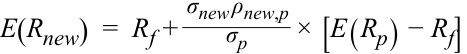
where E(R) is the return from the asset, Rf is the return on the risk-free asset, σ is the standard deviation, ρ is the correlation coefficient, and the subscripts new and p refer to the new stock and existing portfolio. If the new asset’s risk-adjusted return benefits the portfolio, then the asset should be included. The condition can be rewritten using the Sharpe ratio on both sides of the equation as:
trong đó $E(R)$ là tỷ suất sinh lợi từ tài sản, $R_f$ là tỷ suất sinh lợi của tài sản phi rủi ro, $\sigma$ là độ lệch chuẩn, $\rho$ là hệ số tương quan, và các chỉ số dưới $\text{new}$ và $p$ lần lượt đề cập đến cổ phiếu mới và danh mục đầu tư hiện hữu. Nếu tỷ suất sinh lợi đã điều chỉnh rủi ro (risk-adjusted return) của tài sản mới mang lại lợi ích cho danh mục đầu tư, thì tài sản đó nên được đưa vào. Điều kiện này có thể được viết lại bằng cách sử dụng tỷ số Sharpe (Sharpe ratio) ở cả hai vế của phương trình như sau:
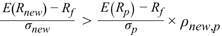
If the Sharpe ratio of the new asset is greater than the Sharpe ratio of the current portfolio times the correlation coefficient, it is beneficial to add the new asset.
Nếu tỷ số Sharpe của tài sản mới lớn hơn tỷ số Sharpe của danh mục đầu tư hiện tại nhân với hệ số tương quan, thì việc thêm tài sản mới vào sẽ mang lại lợi ích.
■ Buy insurance for risky portfolios. It may come as a surprise, but insurance is an investment asset—just a different kind of asset. Insurance has a negative correlation with your assets and is thus very valuable. Insurance gives you a positive return when your assets lose value, but pays nothing if your assets maintain their value. Over time, insurance generates a negative average return. Many individuals, however, are willing to accept a small negative return because insurance reduces their exposure to an extreme loss. In general, it is reasonable to add an investment with a negative return if that investment significantly reduces risk (an example of a classic case of the risk–return trade-off).
- Mua bảo hiểm cho các danh mục đầu tư rủi ro (Buy insurance for risky portfolios). Điều này có thể gây ngạc nhiên, nhưng bảo hiểm (insurance) chính là một tài sản đầu tư—chỉ là một loại tài sản khác biệt. Bảo hiểm có mối tương quan âm với các tài sản của bạn và do đó rất có giá trị. Bảo hiểm mang lại cho bạn tỷ suất sinh lợi dương khi tài sản của bạn mất giá trị, nhưng không chi trả gì cả nếu tài sản của bạn giữ nguyên giá trị. Theo thời gian, bảo hiểm tạo ra một tỷ suất sinh lợi trung bình âm. Tuy nhiên, nhiều cá nhân sẵn sàng chấp nhận một mức lợi nhuận âm nhỏ bởi vì bảo hiểm làm giảm mức độ tiếp xúc của họ trước một khoản lỗ cực đoan. Nhìn chung, hoàn toàn hợp lý khi bổ sung một khoản đầu tư có tỷ suất sinh lợi âm nếu khoản đầu tư đó làm giảm đáng kể rủi ro (một ví dụ điển hình về sự đánh đổi giữa rủi ro và lợi nhuận).
Alternatively, investments with negative correlations also exist. Historically, gold has a negative correlation with stocks; however, the expected return is usually small and sometimes even negative. Investors often include gold and other commodities in their portfolios as a way of reducing their overall portfolio risk, including currency risk and inflation risk.
Ngoài ra, các khoản đầu tư có tương quan âm cũng tồn tại trên thị trường. Trong lịch sử, vàng (gold) có tương quan âm với cổ phiếu; tuy nhiên, tỷ suất sinh lợi kỳ vọng của vàng thường nhỏ và đôi khi thậm chí là âm. Các nhà đầu tư thường đưa vàng và các hàng hóa khác vào danh mục đầu tư của họ như một cách để giảm thiểu rủi ro tổng thể của danh mục đầu tư, bao gồm cả rủi ro tiền tệ và rủi ro lạm phát.
Buying put options is another way of reducing risk. Because put options pay when the underlying asset falls in value (negative correlation), they can protect an investor’s portfolio against catastrophic losses. Of course, put options cost money, and the expected return is zero or marginally negative.
Mua quyền chọn bán (buying put options) là một cách khác để giảm thiểu rủi ro. Bởi vì quyền chọn bán chi trả tiền khi tài sản cơ sở giảm giá trị (tương quan âm), chúng có thể bảo vệ danh mục đầu tư của nhà đầu tư trước những khoản lỗ thảm khốc. Tất nhiên, quyền chọn bán tốn chi phí để mua, và tỷ suất sinh lợi kỳ vọng là bằng không hoặc âm một chút ở mức cận biên.
10
10
EFFICIENT FRONTIER: INVESTMENT OPPORTUNITY SET & MINIMUM VARIANCE PORTFOLIOS
ĐƯỜNG BIÊN HIỆU QUẢ: TẬP HỢP CƠ HỘI ĐẦU TƯ & CÁC DANH MỤC ĐẦU TƯ CÓ PHƯƠNG SAI TỐI THIỂU (EFFICIENT FRONTIER: INVESTMENT OPPORTUNITY SET & MINIMUM VARIANCE PORTFOLIOS)
describe the effect on a portfolio’s risk of investing in assets that are less than perfectly correlated describe and interpret the minimum-variance and efficient frontiers of risky assets and the global minimum-variance portfolio
mô tả tác động lên rủi ro của danh mục đầu tư khi đầu tư vào các tài sản có tương quan nhỏ hơn mức tương quan hoàn hảo (less than perfectly correlated) mô tả và diễn giải đường biên phương sai tối thiểu (minimum-variance frontier) và đường biên hiệu quả (efficient frontier) của các tài sản rủi ro cùng với danh mục đầu tư có phương sai tối thiểu toàn cục (global minimum-variance portfolio)
In this section, we formalize the effect of diversification and expand the set of investments to include all available risky assets in a mean–variance framework. The addition of a risk-free asset generates an optimal risky portfolio and the capital allocation line. We can then derive an investor’s optimal portfolio by overlaying the capital allocation line with the indifference curves of investors.
Trong phần này, chúng ta chuẩn hóa tác động của sự đa dạng hóa và mở rộng tập hợp các khoản đầu tư để bao gồm tất cả các tài sản rủi ro hiện có trong khung phân tích trung bình – phương sai (mean–variance framework). Việc bổ sung một tài sản phi rủi ro sẽ tạo ra một danh mục đầu tư rủi ro tối ưu (optimal risky portfolio) và đường phân bổ vốn (capital allocation line – CAL). Sau đó, chúng ta có thể suy ra danh mục đầu tư tối ưu của nhà đầu tư (investor’s optimal portfolio) bằng cách chồng đường phân bổ vốn lên các đường bàng quan của nhà đầu tư.
Investment Opportunity Set
Tập hợp Cơ hội Đầu tư (Investment Opportunity Set)
If two assets are perfectly correlated, the risk–return opportunity set is represented by a straight line connecting those two assets. The line contains portfolios formed by changing the weight of each asset invested in the portfolio. This correlation was depicted by the straight line (with ρ = 1) in Exhibit 14. If the two assets are not perfectly correlated, the portfolio’s risk is less than the weighted average risk of the components, and the portfolio formed from the two assets bulges on the left as shown by curves with the correlation coefficient (ρ) less than 1.0 in Exhibit 14. All of the points connecting the two assets are achievable (or feasible). The addition of new assets to this portfolio creates more and more portfolios that are either a linear combination of the existing portfolio and the new asset or a curvilinear combination, depending on the correlation between the existing portfolio and the new asset.
Nếu hai tài sản có tương quan hoàn hảo, tập hợp cơ hội rủi ro – lợi nhuận (risk–return opportunity set) được biểu diễn bằng một đường thẳng nối hai tài sản đó. Đường thẳng này chứa các danh mục đầu tư được hình thành bằng cách thay đổi tỷ trọng của mỗi tài sản được đầu tư trong danh mục. Sự tương quan này đã được mô tả bằng đường thẳng (với $\rho = 1$) trong Bảng minh họa 14. Nếu hai tài sản không tương quan hoàn hảo, rủi ro của danh mục đầu tư sẽ nhỏ hơn rủi ro bình quân gia quyền của các thành phần, và danh mục đầu tư được hình thành từ hai tài sản sẽ phình ra về phía bên trái (bulges on the left) như được thể hiện bởi các đường cong có hệ số tương quan ($\rho$) nhỏ hơn 1,0 trong Bảng minh họa 14. Tất cả các điểm nối hai tài sản đều có thể đạt được (hay khả thi – feasible). Việc bổ sung thêm các tài sản mới vào danh mục đầu tư này sẽ tạo ra ngày càng nhiều danh mục đầu tư hơn nữa, vốn là sự kết hợp tuyến tính giữa danh mục đầu tư hiện hữu và tài sản mới hoặc là sự kết hợp dạng đường cong (curvilinear combination), tùy thuộc vào hệ số tương quan giữa danh mục đầu tư hiện hữu và tài sản mới.
As the number of available assets increases, the number of possible combinations increases rapidly. When all investable assets are considered, and there are hundreds and thousands of them, we can construct an opportunity set of investments. The opportunity set will ordinarily span all points within a frontier because it is also possible to reach every possible point within that curve by judiciously creating a portfolio from the investable assets.
Khi số lượng các tài sản hiện có tăng lên, số lượng các sự kết hợp khả thi tăng lên nhanh chóng. Khi tất cả các tài sản có thể đầu tư (investable assets) được xem xét, và có hàng trăm hàng nghìn tài sản như vậy, chúng ta có thể xây dựng một tập hợp cơ hội của các khoản đầu tư (opportunity set of investments). Tập hợp cơ hội thông thường sẽ bao phủ tất cả các điểm nằm bên trong một đường biên (frontier) bởi vì hoàn toàn có thể chạm tới mọi điểm khả thi bên trong đường cong đó bằng cách tạo lập một cách khéo léo một danh mục đầu tư từ các tài sản có thể đầu tư.
We begin with individual investable assets and gradually form portfolios that can be plotted to form a curve as shown in Exhibit 18. All points on the curve and points to the right of the curve are attainable by a combination of one or more of the investable assets. This set of points is called the investment opportunity set. Initially, the opportunity set consists of domestic assets only and is labeled as such in Exhibit 18.
Chúng ta bắt đầu với các tài sản riêng lẻ có thể đầu tư và dần dần hình thành các danh mục đầu tư có thể được vẽ trên đồ thị để tạo thành một đường cong như trong Bảng minh họa 18. Tất cả các điểm nằm trên đường cong và các điểm nằm về phía bên phải của đường cong đều có thể đạt được bằng sự kết hợp của một hoặc nhiều tài sản có thể đầu tư. Tập hợp các điểm này được gọi là tập hợp cơ hội đầu tư (investment opportunity set). Ban đầu, tập hợp cơ hội chỉ bao gồm các tài sản trong nước (domestic assets only) và được gắn nhãn như vậy trong Bảng minh họa 18.
Exhibit 18: Investment Opportunity Set
Bảng minh họa 18: Tập hợp Cơ hội Đầu tư (Investment Opportunity Set)
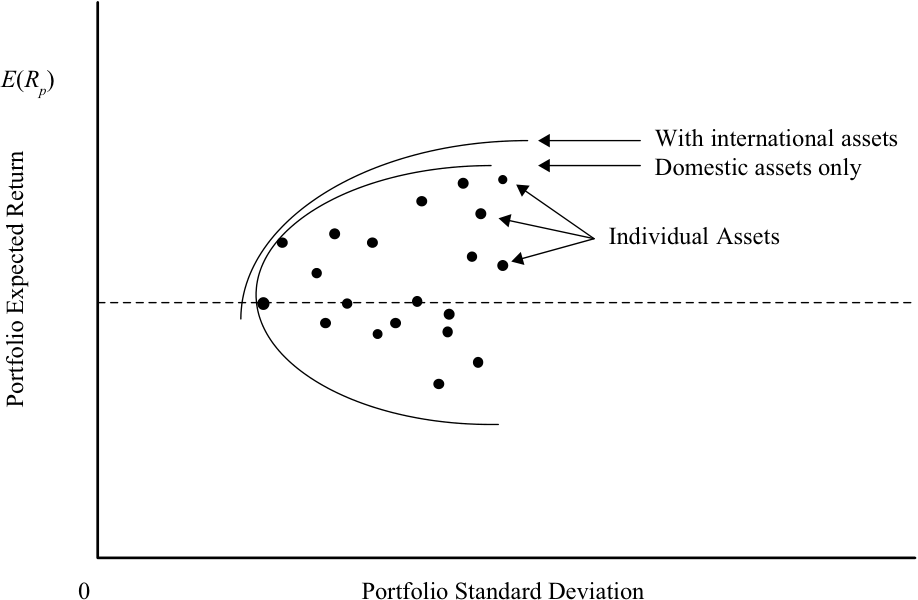
Chú thích hình ảnh: Trục hoành là Độ lệch chuẩn danh mục đầu tư (Portfolio Standard Deviation), trục tung là Lợi nhuận kỳ vọng của danh mục đầu tư (Portfolio Expected Return $E(R_p)$). Các chấm tròn biểu diễn Các tài sản riêng lẻ (Individual Assets). Đường cong liền nét bên trong là Tập hợp cơ hội chỉ gồm các tài sản trong nước (Domestic assets only); đường cong nét đứt mở rộng ra phía tây bắc là Tập hợp cơ hội khi có thêm các tài sản quốc tế (With international assets).
Addition of Asset Classes
Bổ sung các Nhóm Tài sản (Addition of Asset Classes)
Exhibit 18 shows the effect of adding a new asset class, such as international assets. As long as the new asset class is not perfectly correlated with the existing asset class, the investment opportunity set will expand out further to the northwest, providing a superior risk–return trade-off.
Bảng minh họa 18 cho thấy tác động của việc bổ sung thêm một nhóm tài sản mới, chẳng hạn như các tài sản quốc tế (international assets). Miễn là nhóm tài sản mới không tương quan hoàn hảo với nhóm tài sản hiện hữu, tập hợp cơ hội đầu tư sẽ mở rộng hơn nữa về phía tây bắc (northwest), mang lại một sự đánh đổi rủi ro – lợi nhuận vượt trội hơn.
The investment opportunity set with international assets dominates the opportunity set that includes only domestic assets. Adding other asset classes will have the same impact on the opportunity set. Thus, we should continue to add asset classes until they do not further improve the risk–return trade-off. The benefits of diversification can be fully captured in this way in the construction of the investment opportunity set, and eventually in the selection of the optimal portfolio.
Tập hợp cơ hội đầu tư có các tài sản quốc tế chiếm ưu thế vượt trội (dominates) so với tập hợp cơ hội chỉ bao gồm các tài sản trong nước. Việc bổ sung thêm các nhóm tài sản khác cũng sẽ có tác động tương tự lên tập hợp cơ hội. Do đó, chúng ta nên tiếp tục bổ sung các nhóm tài sản cho đến khi chúng không còn cải thiện thêm sự đánh đổi rủi ro – lợi nhuận nữa. Những lợi ích của sự đa dạng hóa có thể được nắm bắt trọn vẹn theo cách này trong việc xây dựng tập hợp cơ hội đầu tư, và cuối cùng là trong việc lựa chọn danh mục đầu tư tối ưu.
In the discussion that follows in this section, we will assume that all investable assets available to an investor are included in the investment opportunity set and no special attention needs to be paid to new asset classes or new investment opportunities.
Trong phần thảo luận tiếp theo của mục này, chúng ta sẽ giả định rằng tất cả các tài sản có thể đầu tư hiện có đối với một nhà đầu tư đều đã được đưa vào trong tập hợp cơ hội đầu tư và không cần phải dành sự chú ý đặc biệt nào cho các nhóm tài sản mới hay các cơ hội đầu tư mới nữa.
Minimum-Variance Portfolios
Các Danh mục Đầu tư có Phương sai Tối thiểu (Minimum-Variance Portfolios)
The investment opportunity set consisting of all available investable sets is shown in Exhibit 19. There are a large number of portfolios available for investment, but we must choose a single optimal portfolio. In this subsection, we begin the selection process by narrowing the choice to fewer portfolios.
Tập hợp cơ hội đầu tư bao gồm tất cả các tập hợp có thể đầu tư hiện có được thể hiện trong Bảng minh họa 19. Có một số lượng lớn các danh mục đầu tư sẵn có để đầu tư, nhưng chúng ta phải chọn ra một danh mục đầu tư tối ưu duy nhất. Trong tiểu mục này, chúng ta bắt đầu quy trình lựa chọn bằng cách thu hẹp sự lựa chọn xuống còn ít danh mục đầu tư hơn.
Exhibit 19: Minimum-Variance Frontier
Bảng minh họa 19: Đường biên Phương sai Tối thiểu (Minimum-Variance Frontier)
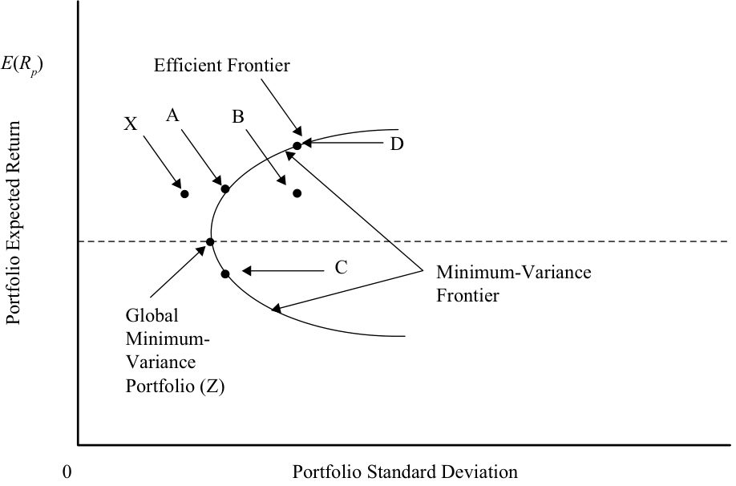
Chú thích hình ảnh: Trục hoành là Độ lệch chuẩn danh mục đầu tư (Portfolio Standard Deviation), trục tung là Lợi nhuận kỳ vọng của danh mục đầu tư (Portfolio Expected Return $E(R_p)$). Toàn bộ đường cong bao ngoài bên trái là Đường biên phương sai tối thiểu (Minimum-Variance Frontier). Điểm ngoài cùng bên trái $Z$ là Danh mục đầu tư có phương sai tối thiểu toàn cục (Global Minimum-Variance Portfolio). Phần nhánh trên từ $Z$ qua $A$ đến $D$ là Đường biên hiệu quả (Efficient Frontier). Điểm $X$ nằm ngoài vùng khả thi (bên trái $A$), điểm $B$ nằm bên trong vùng khả thi (bên phải $A$), và điểm $C$ nằm ở nhánh dưới của đường biên phương sai tối thiểu.
Minimum-Variance Frontier
Đường biên Phương sai Tối thiểu (Minimum-Variance Frontier)
Risk-averse investors seek to minimize risk for a given return. Consider Points A, B, and X in Exhibit 19 and assume that they are on the same horizontal line by construction. Thus, the three points have the same expected return, E ( R 1), as do all other points on the imaginary line connecting A, B, and X. Given a choice, an investor will choose the point with the minimum risk, which is Point X. Point X, however, is unattainable because it does not lie within the investment opportunity set. Thus, the minimum risk
Các nhà đầu tư ngại rủi ro tìm cách tối thiểu hóa rủi ro cho một mức lợi nhuận nhất định. Hãy xét các Điểm A, B, và X trong Bảng minh họa 19 và giả sử rằng chúng nằm trên cùng một đường thẳng nằm ngang theo cách dựng hình. Do đó, cả ba điểm đều có cùng tỷ suất sinh lợi kỳ vọng, $E(R_1)$, giống như tất cả các điểm khác nằm trên đường thẳng tưởng tượng nối A, B, và X. Khi được quyền lựa chọn, một nhà đầu tư sẽ chọn điểm có rủi ro tối thiểu, tức là Điểm X. Tuy nhiên, Điểm X không thể đạt được (unattainable) bởi vì nó không nằm trong tập hợp cơ hội đầu tư. Do đó, mức rủi ro tối thiểu
that we can attain for E ( R 1) is at Point A. Point B and all points to the right of Point A are feasible but they have higher risk. Therefore, a risk-averse investor will choose only Point A in preference to any other portfolio with the same return.
mà chúng ta có thể đạt được cho mức lợi nhuận $E(R_1)$ là tại Điểm A. Điểm B và tất cả các điểm nằm về phía bên phải của Điểm A đều khả thi nhưng chúng lại có rủi ro cao hơn. Vì vậy, một nhà đầu tư ngại rủi ro sẽ chỉ chọn Điểm A thay vì bất kỳ danh mục đầu tư nào khác có cùng mức lợi nhuận.
Similarly, Point C is the minimum variance point for the return earned at C. Points to the right of C have higher risk. We can extend the above analysis to all possible returns. In all cases, we find that the minimum-variance portfolio is the one that lies on the solid curve drawn in Exhibit 19. The entire collection of these minimum-variance portfolios is referred to as the minimum-variance frontier. The minimum-variance frontier defines the smaller set of portfolios in which investors would want to invest. Note that no risk-averse investor will choose to invest in a portfolio to the right of the minimum-variance frontier because a portfolio on the minimum-variance frontier can give the same return but at a lower risk.
Tương tự, Điểm C là điểm có phương sai tối thiểu đối với mức lợi nhuận kiếm được tại C. Các điểm nằm về phía bên phải của C đều có rủi ro cao hơn. Chúng ta có thể mở rộng phân tích trên cho tất cả các mức lợi nhuận khả thi. Trong mọi trường hợp, chúng ta đều thấy rằng danh mục đầu tư có phương sai tối thiểu (minimum-variance portfolio) là danh mục nằm trên đường cong liền nét được vẽ trong Bảng minh họa 19. Toàn bộ tập hợp các danh mục đầu tư có phương sai tối thiểu này được gọi là đường biên phương sai tối thiểu (minimum-variance frontier). Đường biên phương sai tối thiểu xác định một tập hợp nhỏ hơn các danh mục đầu tư mà các nhà đầu tư muốn đầu tư vào. Lưu ý rằng không có nhà đầu tư ngại rủi ro nào lại chọn đầu tư vào một danh mục nằm về phía bên phải của đường biên phương sai tối thiểu bởi vì một danh mục đầu tư nằm ngay trên đường biên phương sai tối thiểu có thể mang lại cùng mức lợi nhuận nhưng ở một mức rủi ro thấp hơn.
Global Minimum-Variance Portfolio
Danh mục Đầu tư có Phương sai Tối thiểu Toàn cục (Global Minimum-Variance Portfolio)
The left-most point on the minimum-variance frontier is the portfolio with the minimum variance among all portfolios of risky assets, and is referred to as the global minimum-variance portfolio . An investor cannot hold a portfolio consisting of risky assets that has less risk than that of the global minimum-variance portfolio. Note the emphasis on “risky” assets. Later, the introduction of a risk-free asset will allow us to relax this constraint.
Điểm ngoài cùng bên trái trên đường biên phương sai tối thiểu là danh mục đầu tư có phương sai nhỏ nhất trong số tất cả các danh mục đầu tư gồm các tài sản rủi ro, và được gọi là danh mục đầu tư có phương sai tối thiểu toàn cục (global minimum-variance portfolio). Một nhà đầu tư không thể nắm giữ một danh mục đầu tư bao gồm các tài sản rủi ro mà lại có mức rủi ro thấp hơn mức rủi ro của danh mục đầu tư có phương sai tối thiểu toàn cục. Hãy lưu ý sự nhấn mạnh vào cụm từ tài sản “rủi ro”. Sau này, việc đưa thêm một tài sản phi rủi ro vào sẽ cho phép chúng ta nới lỏng ràng buộc này.
Efficient Frontier of Risky Assets
Đường biên Hiệu quả của các Tài sản Rủi ro (Efficient Frontier of Risky Assets)
The minimum-variance frontier gives us portfolios with the minimum variance for a given return. However, investors also want to maximize return for a given risk. Observe Points A and C on the minimum-variance frontier shown in Exhibit 19. Both of them have the same risk. Given a choice, an investor will choose Portfolio A because it has a higher return. No one will choose Portfolio C. The same analysis applies to all points on the minimum-variance frontier that lie below the global minimum-variance portfolio. Thus, portfolios on the curve below the global minimum-variance portfolio and to the right of the global minimum-variance portfolio are not beneficial and are inefficient portfolios for an investor.
Đường biên phương sai tối thiểu mang lại cho chúng ta các danh mục đầu tư có phương sai nhỏ nhất cho một mức lợi nhuận nhất định. Tuy nhiên, các nhà đầu tư cũng muốn tối đa hóa lợi nhuận cho một mức rủi ro nhất định. Hãy quan sát Điểm A và Điểm C trên đường biên phương sai tối thiểu được thể hiện trong Bảng minh họa 19. Cả hai điểm này đều có cùng mức rủi ro. Khi được quyền lựa chọn, một nhà đầu tư sẽ chọn Danh mục A bởi vì nó có lợi nhuận cao hơn. Sẽ không ai chọn Danh mục C. Phân tích tương tự cũng áp dụng cho tất cả các điểm nằm trên đường biên phương sai tối thiểu ở phía dưới danh mục đầu tư có phương sai tối thiểu toàn cục. Do đó, các danh mục đầu tư nằm trên đường cong phía dưới danh mục có phương sai tối thiểu toàn cục và nằm về phía bên phải của nó đều không mang lại lợi ích và là những danh mục đầu tư không hiệu quả (inefficient portfolios) đối với một nhà đầu tư.
The curve that lies above and to the right of the global minimum-variance portfolio is referred to as the Markowitz efficient frontier because it contains all portfolios of risky assets that rational, risk-averse investors will choose.
Đường cong nằm phía trên và về phía bên phải của danh mục đầu tư có phương sai tối thiểu toàn cục được gọi là đường biên hiệu quả Markowitz (Markowitz efficient frontier) bởi vì nó chứa tất cả các danh mục đầu tư gồm các tài sản rủi ro mà những nhà đầu tư hợp lý, ngại rủi ro (rational, risk-averse investors) sẽ lựa chọn.
An important observation that is often ignored is the slope at various points on the efficient frontier. As we move right from the global minimum-variance portfolio (Point Z) in Exhibit 19, there is an increase in risk with a concurrent increase in return. The increase in return with every unit increase in risk, however, keeps decreasing as we move from left to the right because the slope continues to decrease. The slope at Point D is less than the slope at Point A, which is less than the slope at Point Z. The increase in return by moving from Point Z to Point A is the same as the increase in return by moving from Point A to Point D. It can be seen that the additional risk in moving from Point A to Point D is 3 to 4 times more than the additional risk in moving from Point Z to Point A. Thus, investors obtain decreasing increases in returns as they assume more risk.
Một quan sát quan trọng thường bị bỏ qua là độ dốc (slope) tại các điểm khác nhau trên đường biên hiệu quả. Khi chúng ta di chuyển sang phải từ danh mục đầu tư có phương sai tối thiểu toàn cục (Điểm Z) trong Bảng minh họa 19, có sự gia tăng về rủi ro đi kèm với sự gia tăng đồng thời về lợi nhuận. Tuy nhiên, mức tăng lợi nhuận ứng với mỗi đơn vị rủi ro tăng thêm lại liên tục giảm dần khi chúng ta di chuyển từ trái sang phải bởi vì độ dốc liên tục giảm. Độ dốc tại Điểm D nhỏ hơn độ dốc tại Điểm A, và độ dốc tại Điểm A lại nhỏ hơn độ dốc tại Điểm Z. Mức tăng lợi nhuận khi di chuyển từ Điểm Z đến Điểm A bằng với mức tăng lợi nhuận khi di chuyển từ Điểm A đến Điểm D. Có thể thấy rằng lượng rủi ro tăng thêm khi di chuyển từ Điểm A đến Điểm D gấp từ 3 đến 4 lần so với lượng rủi ro tăng thêm khi di chuyển từ Điểm Z đến Điểm A. Như vậy, các nhà đầu tư nhận được mức gia tăng lợi nhuận ngày càng giảm dần (decreasing increases in returns) khi họ gánh chịu thêm nhiều rủi ro.
11
11
EFFICIENT FRONTIER: A RISK-FREE ASSET AND MANY RISKY ASSETS
ĐƯỜNG BIÊN HIỆU QUẢ: MỘT TÀI SẢN PHI RỦI RO VÀ NHIỀU TÀI SẢN RỦI RO (EFFICIENT FRONTIER: A RISK-FREE ASSET AND MANY RISKY ASSETS)
explain the selection of an optimal portfolio, given an investor’s utility (or risk aversion) and the capital allocation line
giải thích việc lựa chọn danh mục đầu tư tối ưu (optimal portfolio), khi biết độ hữu dụng (utility) (hoặc mức độ ngại rủi ro) của nhà đầu tư và đường phân bổ vốn (capital allocation line)
Until now, we have only considered risky assets in which the return is risky or uncertain. Most investors, however, have access to a risk-free asset, most notably from securities issued by the government. The addition of a risk-free asset makes the investment opportunity set much richer than the investment opportunity set consisting only of risky assets.
Cho đến nay, chúng ta mới chỉ xem xét các tài sản rủi ro trong đó tỷ suất sinh lợi là có rủi ro hoặc không chắc chắn. Tuy nhiên, hầu hết các nhà đầu tư đều có quyền tiếp cận với một tài sản phi rủi ro (risk-free asset), đáng chú ý nhất là từ các chứng khoán do chính phủ phát hành. Việc bổ sung thêm một tài sản phi rủi ro làm cho tập hợp cơ hội đầu tư trở nên phong phú hơn nhiều so với tập hợp cơ hội đầu tư chỉ bao gồm các tài sản rủi ro.
Capital Allocation Line and Optimal Risky Portfolio
Đường phân bổ vốn và Danh mục Đầu tư Rủi ro Tối ưu (Capital Allocation Line and Optimal Risky Portfolio)
By definition, a risk-free asset has zero risk so it must lie on the y -axis in a mean-variance graph. A risk-free asset with a return of Rf is plotted in Exhibit 20. This asset can now be combined with a portfolio of risky assets. The combination of a risk-free asset with a portfolio of risky assets is a straight line, such as in Section 6 (see Exhibit 9). Unlike in Section 6, however, we have many risky portfolios to choose from instead of a single risky portfolio.
Theo định nghĩa, một tài sản phi rủi ro có rủi ro bằng không nên nó phải nằm trên trục tung (y-axis) trong đồ thị trung bình – phương sai. Một tài sản phi rủi ro có tỷ suất sinh lợi $R_f$ được vẽ trong Bảng minh họa 20. Tài sản này bây giờ có thể được kết hợp với một danh mục các tài sản rủi ro. Sự kết hợp giữa một tài sản phi rủi ro với một danh mục các tài sản rủi ro là một đường thẳng, giống như trong Phần 6 (xem Bảng minh họa 9). Tuy nhiên, không giống như trong Phần 6, chúng ta có nhiều danh mục đầu tư rủi ro để lựa chọn thay vì chỉ một danh mục đầu tư rủi ro duy nhất.
Exhibit 20: Optimal Risky Portfolio
Bảng minh họa 20: Danh mục Đầu tư Rủi ro Tối ưu (Optimal Risky Portfolio)
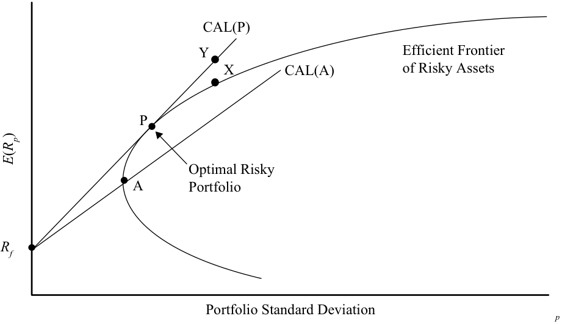
Chú thích hình ảnh: Trục hoành là Độ lệch chuẩn danh mục đầu tư ($\sigma_p$), trục tung là Lợi nhuận kỳ vọng ($E(R_p)$). Đường $\text{CAL}(A)$ nối từ $R_f$ cắt Đường biên hiệu quả của các tài sản rủi ro (Efficient Frontier of Risky Assets) tại điểm $A$. Đường $\text{CAL}(P)$ nối từ $R_f$ tiếp xúc với Đường biên hiệu quả tại điểm $P$ – Danh mục đầu tư rủi ro tối ưu (Optimal Risky Portfolio). Điểm $Y$ trên $\text{CAL}(P)$ nằm ngay phía trên điểm $X$ của Đường biên hiệu quả ở cùng mức độ lệch chuẩn.
All portfolios on the efficient frontier are candidates for being combined with the risk-free asset. Two combinations are shown in Exhibit 20: one between the risk-free asset and efficient Portfolio A and the other between the risk-free asset and efficient Portfolio P. Comparing capital allocation line A and capital allocation line P reveals that there is a point on CAL(P) with a higher return and same risk for each point on CAL(A). In other words, the portfolios on CAL(P) dominate the portfolios on CAL(A). Therefore, an investor will choose CAL(P) over CAL(A). We would like to move further northwest to achieve even better portfolios. None of those portfolios, however, is attainable because they are above the efficient frontier.
Tất cả các danh mục đầu tư nằm trên đường biên hiệu quả đều là những ứng cử viên để được kết hợp với tài sản phi rủi ro. Hai sự kết hợp được thể hiện trong Bảng minh họa 20: một sự kết hợp giữa tài sản phi rủi ro và Danh mục hiệu quả A, và sự kết hợp kia là giữa tài sản phi rủi ro và Danh mục hiệu quả P. Khi so sánh đường phân bổ vốn A ($\text{CAL}(A)$) và đường phân bổ vốn P ($\text{CAL}(P)$), ta thấy rằng luôn có một điểm trên $\text{CAL}(P)$ có lợi nhuận cao hơn và cùng mức rủi ro đối với mỗi điểm trên $\text{CAL}(A)$. Nói cách khác, các danh mục đầu tư trên $\text{CAL}(P)$ chiếm ưu thế vượt trội (dominate) so với các danh mục đầu tư trên $\text{CAL}(A)$. Do đó, một nhà đầu tư sẽ chọn $\text{CAL}(P)$ thay vì $\text{CAL}(A)$. Chúng ta muốn dịch chuyển xa hơn nữa về phía tây bắc để đạt được những danh mục đầu tư tốt hơn nữa. Tuy nhiên, không có danh mục đầu tư nào trong số đó có thể đạt được bởi vì chúng nằm phía trên đường biên hiệu quả.
What about other points on the efficient frontier? For example, Point X is on the efficient frontier and has the highest return of all risky portfolios for its risk. However, Point Y on CAL(P), achievable by leveraging Portfolio P as seen in Section 6, lies above Point X and has the same risk but higher return. In the same way, we can observe that not only does CAL(P) dominate CAL(A) but it also dominates the Markowitz efficient frontier of risky assets.
Thế còn các điểm khác trên đường biên hiệu quả thì sao? Ví dụ, Điểm X nằm trên đường biên hiệu quả và có tỷ suất sinh lợi cao nhất trong số tất cả các danh mục đầu tư rủi ro ở mức rủi ro của nó. Tuy nhiên, Điểm Y trên $\text{CAL}(P)$, có thể đạt được bằng cách sử dụng đòn bẩy (leveraging) đối với Danh mục P như đã thấy trong Phần 6, nằm phía trên Điểm X và có cùng mức rủi ro nhưng lợi nhuận cao hơn. Theo cùng cách đó, chúng ta có thể quan sát thấy rằng $\text{CAL}(P)$ không chỉ chiếm ưu thế vượt trội so với $\text{CAL}(A)$ mà còn chiếm ưu thế vượt trội so với cả đường biên hiệu quả Markowitz của các tài sản rủi ro.
CAL(P) is the optimal capital allocation line and Portfolio P is the optimal risky portfolio. Thus, with the addition of the risk-free asset, we are able to narrow our selection of risky portfolios to a single optimal risky portfolio, P, which is at the tangent of CAL(P) and the efficient frontier of risky assets.
$\text{CAL}(P)$ là đường phân bổ vốn tối ưu (optimal capital allocation line) và Danh mục P là danh mục đầu tư rủi ro tối ưu (optimal risky portfolio). Như vậy, với việc bổ sung thêm tài sản phi rủi ro, chúng ta có thể thu hẹp việc lựa chọn các danh mục đầu tư rủi ro xuống còn một danh mục đầu tư rủi ro tối ưu duy nhất, P, nằm tại tiếp điểm của $\text{CAL}(P)$ và đường biên hiệu quả của các tài sản rủi ro.
The Two-Fund Separation Theorem
Định lý Phân tách Hai Quỹ (The Two-Fund Separation Theorem)
The two-fund separation theorem states that all investors regardless of taste, risk preferences, and initial wealth will hold a combination of two portfolios or funds: a risk-free asset and an optimal portfolio of risky assets.6
Định lý phân tách hai quỹ (two-fund separation theorem) phát biểu rằng tất cả các nhà đầu tư bất kể thị hiếu, sở thích rủi ro, và mức tài sản ban đầu sẽ đều nắm giữ một sự kết hợp của hai danh mục đầu tư hay hai quỹ: một tài sản phi rủi ro và một danh mục đầu tư tối ưu gồm các tài sản rủi ro.6
The separation theorem allows us to divide an investor’s investment problem into two distinct steps: the investment decision and the financing decision. In the first step, as in the previous analysis, the investor identifies the optimal risky portfolio. The optimal risky portfolio is selected from numerous risky portfolios without considering the investor’s preferences. The investment decision at this step is based on the optimal risky portfolio’s (a single portfolio) return, risk, and correlations.
Định lý phân tách cho phép chúng ta chia bài toán đầu tư của một nhà đầu tư thành hai bước riêng biệt: quyết định đầu tư (investment decision) và quyết định tài trợ (financing decision). Trong bước đầu tiên, giống như trong phân tích trước đó, nhà đầu tư xác định danh mục đầu tư rủi ro tối ưu. Danh mục đầu tư rủi ro tối ưu được lựa chọn từ vô số các danh mục đầu tư rủi ro mà không cần xem xét đến sở thích của nhà đầu tư. Quyết định đầu tư ở bước này được dựa trên tỷ suất sinh lợi, rủi ro, và các hệ số tương quan của danh mục đầu tư rủi ro tối ưu (một danh mục duy nhất).
The capital allocation line connects the optimal risky portfolio and the risk-free asset. All optimal investor portfolios must be on this line. Each investor’s optimal portfolio on the CAL(P) is determined in the second step. Considering each individual investor’s risk preference, using indifference curves, determines the investor’s allocation to the risk-free asset (lending) and to the optimal risky portfolio. Portfolios beyond the optimal risky portfolio are obtained by borrowing at the risk-free rate (i.e., buying on margin). Therefore, the individual investor’s risk preference determines the amount of financing (i.e., lending to the government instead of investing in the optimal risky portfolio or borrowing to purchase additional amounts of the optimal risky portfolio).
Đường phân bổ vốn kết nối danh mục đầu tư rủi ro tối ưu và tài sản phi rủi ro. Tất cả các danh mục đầu tư tối ưu của nhà đầu tư đều phải nằm trên đường thẳng này. Danh mục đầu tư tối ưu của từng nhà đầu tư trên $\text{CAL}(P)$ được xác định ở bước thứ hai. Việc xem xét sở thích rủi ro của từng nhà đầu tư cá nhân, bằng cách sử dụng các đường bàng quan, sẽ quyết định mức phân bổ của nhà đầu tư vào tài sản phi rủi ro (cho vay – lending) và vào danh mục đầu tư rủi ro tối ưu. Các danh mục đầu tư nằm vượt quá danh mục đầu tư rủi ro tối ưu đạt được bằng cách đi vay (borrowing) với lãi suất phi rủi ro (tức là mua ký quỹ – buying on margin). Do đó, sở thích rủi ro của từng nhà đầu tư cá nhân sẽ quyết định quy mô tài trợ (tức là cho chính phủ vay thay vì đầu tư vào danh mục rủi ro tối ưu hoặc đi vay để mua thêm danh mục rủi ro tối ưu).
EXAMPLE 7
VÍ DỤ 7
Choosing the Right Portfolio
Lựa chọn Đúng Danh mục Đầu tư (Choosing the Right Portfolio)
In Exhibit 21, the risk and return of the points marked are as follows:
Trong Bảng minh họa 21, rủi ro và lợi nhuận của các điểm được đánh dấu có giá trị như sau:
| Point | Return (%) | Risk (%) | Point (%) | Return (%) | Risk (%) |
|---|---|---|---|---|---|
| A | 15 | 10 | B | 11 | 10 |
| C | 15 | 30 | D | 25 | 30 |
| F | 4 | 0 | G (gold) | 10 | 30 |
| P | 16 | 17 |
| Điểm (Point) | Lợi nhuận (Return) (%) | Rủi ro (Risk) (%) | Điểm (Point) | Lợi nhuận (Return) (%) | Rủi ro (Risk) (%) |
|---|---|---|---|---|---|
| A | 15 | 10 | B | 11 | 10 |
| C | 15 | 30 | D | 25 | 30 |
| F | 4 | 0 | G (vàng – gold) | 10 | 30 |
| P | 16 | 17 |
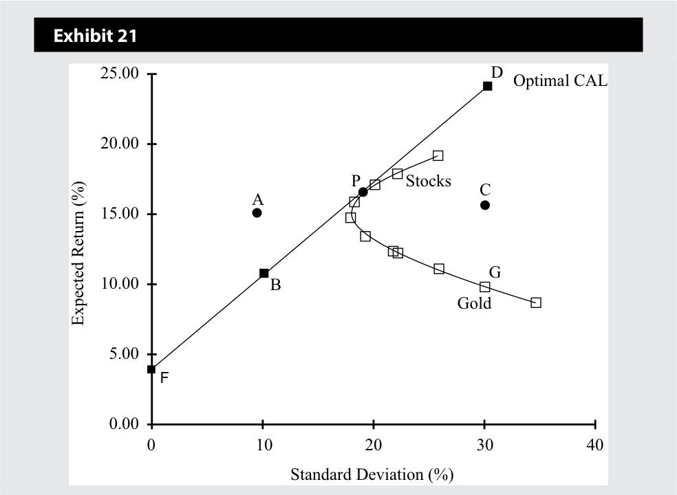
Chú thích hình ảnh: Bảng minh họa 21: Trục hoành là Độ lệch chuẩn (%), trục tung là Lợi nhuận kỳ vọng (%). Đường CAL tối ưu (Optimal CAL) đi từ điểm $F(0, 4)$, qua $B(10, 11)$, tiếp xúc với đường biên hiệu quả tại $P(17, 16)$ (Cổ phiếu – Stocks), và kéo dài tới $D(30, 25)$. Điểm $A(10, 15)$ nằm phía trên đường CAL; điểm $C(30, 15)$ và $G(30, 10)$ (Vàng – Gold) nằm trên đường biên của tập hợp khả thi nhưng ở phía dưới đường CAL.
Answer the following questions with reference to the points plotted on Exhibit 21 and explain your answers. The investor is choosing one portfolio based on the graph.
Hãy trả lời các câu hỏi sau đây với sự tham chiếu đến các điểm được vẽ trên Bảng minh họa 21 và giải thích câu trả lời của bạn. Nhà đầu tư đang lựa chọn một danh mục đầu tư dựa trên đồ thị này.
- Which of the above points is not achievable?
- Điểm nào trong số các điểm trên không thể đạt được?
Solution:
Lời giải:
Portfolio A is not attainable because it lies outside the feasible set and not on the capital allocation line.
Danh mục A không thể đạt được (not attainable) bởi vì nó nằm bên ngoài tập hợp khả thi và không nằm trên đường phân bổ vốn.
- Which of these portfolios will not be chosen by a rational, risk-averse investor?
- Danh mục đầu tư nào trong số các danh mục này sẽ không được lựa chọn bởi một nhà đầu tư hợp lý, ngại rủi ro?
Solution:
Lời giải:
Portfolios G and C will not be chosen because D provides higher return for the same risk. G and C are the only investable points that do not lie on the capital allocation line.
Danh mục G và C sẽ không được lựa chọn bởi vì D mang lại mức lợi nhuận cao hơn với cùng mức rủi ro. G và C là những điểm có thể đầu tư duy nhất không nằm trên đường phân bổ vốn.
- Which of these portfolios is most suitable for a risk-neutral investor?
- Danh mục đầu tư nào trong số các danh mục này là phù hợp nhất cho một nhà đầu tư trung lập với rủi ro?
Solution:
Lời giải:
Portfolio D is most suitable because a risk-neutral investor cares only about return and portfolio D provides the highest return. A = 0 in the utility formula.
Danh mục D là phù hợp nhất bởi vì một nhà đầu tư trung lập với rủi ro chỉ quan tâm đến lợi nhuận và danh mục D mang lại mức lợi nhuận cao nhất. $A = 0$ trong công thức tính độ hữu dụng.
- Gold is on the inefficient part of the feasible set. Nonetheless, gold is owned by many rational investors as part of a larger portfolio. Why?
- Vàng nằm ở phần không hiệu quả của tập hợp khả thi. Tuy nhiên, vàng vẫn được sở hữu bởi nhiều nhà đầu tư hợp lý như một phần của một danh mục đầu tư lớn hơn. Tại sao?
Solution:
Lời giải:
Gold may be owned as part of a portfolio (not as the portfolio) because gold has low or negative correlation with many risky assets, such as stocks. Being part of a portfolio can thus reduce overall risk even though its standalone risk is high and return is low. Note that gold’s price is not stable—its return is very risky (30 percent). Even risk seekers will choose D over G, which has the same risk but higher return.
Vàng có thể được sở hữu như một phần của danh mục đầu tư (chứ không phải là toàn bộ danh mục đầu tư) bởi vì vàng có hệ số tương quan thấp hoặc âm với nhiều tài sản rủi ro, chẳng hạn như cổ phiếu. Do đó, việc trở thành một phần của danh mục đầu tư có thể làm giảm rủi ro tổng thể mặc dù rủi ro đơn lẻ (standalone risk) của nó cao và lợi nhuận thấp. Lưu ý rằng giá vàng không hề ổn định—tỷ suất sinh lợi của nó rất rủi ro (30%). Ngay cả những người tìm kiếm rủi ro cũng sẽ chọn D thay vì G, vì D có cùng mức rủi ro nhưng lợi nhuận cao hơn.
- What is the utility of an investor at point P with a risk aversion coefficient of 3?
- Độ hữu dụng của một nhà đầu tư tại điểm P với hệ số ngại rủi ro bằng 3 là bao nhiêu?
Solution:
Lời giải:
- U = E ( r ) − 0.5Aσ2 = 0.16 − 0.5 × 3 × 0.0289 = 0.1167 = 11.67%.
- $U = E(r) - 0,5 A \sigma^2 = 0,16 - 0,5 \times 3 \times 0,0289 = 0,1167 = 11,67\%$.
EFFICIENT FRONTIER: OPTIMAL INVESTOR PORTFOLIO
ĐƯỜNG BIÊN HIỆU QUẢ: DANH MỤC ĐẦU TƯ TỐI ƯU CỦA NHÀ ĐẦU TƯ (EFFICIENT FRONTIER: OPTIMAL INVESTOR PORTFOLIO)
12
12
explain the selection of an optimal portfolio, given an investor’s utility (or risk aversion) and the capital allocation line
giải thích việc lựa chọn danh mục đầu tư tối ưu (optimal portfolio), khi biết độ hữu dụng (utility) (hoặc mức độ ngại rủi ro) của nhà đầu tư và đường phân bổ vốn (capital allocation line)
The CAL(P) in Exhibit 22 contains the best possible portfolios available to investors. Each of those portfolios is a linear combination of the risk-free asset and the optimal risky portfolio. Among the available portfolios, the selection of each investor’s optimal portfolio depends on the risk preferences of an investor. In Sections 4–6, we discussed that the individual investor’s risk preferences are incorporated into their indifference curves. These can be used to select the optimal portfolio.
Đường $\text{CAL}(P)$ trong Bảng minh họa 22 chứa các danh mục đầu tư tốt nhất có thể hiện có dành cho các nhà đầu tư. Mỗi danh mục đầu tư trong số đó là một sự kết hợp tuyến tính giữa tài sản phi rủi ro và danh mục đầu tư rủi ro tối ưu. Trong số các danh mục đầu tư hiện có, việc lựa chọn danh mục đầu tư tối ưu của từng nhà đầu tư phụ thuộc vào sở thích rủi ro của nhà đầu tư đó. Trong Phần 4–6, chúng ta đã thảo luận rằng sở thích rủi ro của nhà đầu tư cá nhân được tích hợp vào các đường bàng quan của họ. Những đường này có thể được sử dụng để lựa chọn danh mục đầu tư tối ưu.
Exhibit 22 shows an indifference curve that is tangent to the capital allocation line, CAL(P). Indifference curves with higher utility than this one lie above the capital allocation line, so their portfolios are not achievable. Indifference curves that lie below this one are not preferred because they have lower utility. Thus, the optimal portfolio for the investor with this indifference curve is portfolio C on CAL(P), which is tangent to the indifference curve.
Bảng minh họa 22 cho thấy một đường bàng quan tiếp xúc (tangent) với đường phân bổ vốn, $\text{CAL}(P)$. Các đường bàng quan có độ hữu dụng cao hơn đường này đều nằm phía trên đường phân bổ vốn, vì vậy các danh mục đầu tư của chúng không thể đạt được. Các đường bàng quan nằm phía dưới đường này không được ưa thích bởi vì chúng có độ hữu dụng thấp hơn. Do đó, danh mục đầu tư tối ưu đối với nhà đầu tư có đường bàng quan này chính là danh mục C nằm trên $\text{CAL}(P)$, tại điểm tiếp xúc với đường bàng quan.
Exhibit 22: Optimal Investor Portfolio
Bảng minh họa 22: Danh mục Đầu tư Tối ưu của Nhà đầu tư (Optimal Investor Portfolio)
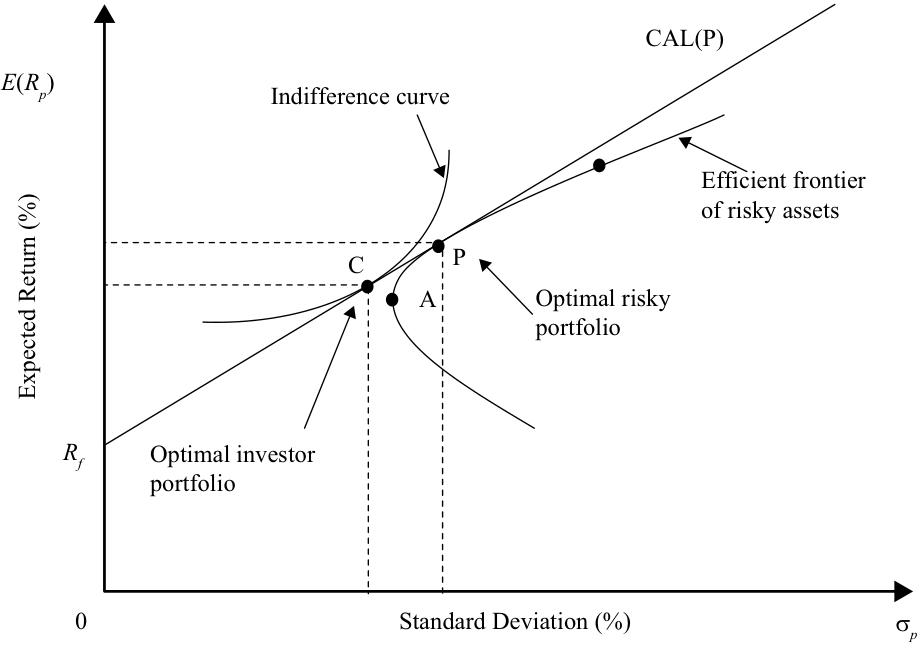
Chú thích hình ảnh: Trục hoành là Độ lệch chuẩn ($\sigma_p$ %), trục tung là Lợi nhuận kỳ vọng ($E(R_p)$ %). Đường $\text{CAL}(P)$ bắt đầu từ $R_f$ tiếp xúc với Đường biên hiệu quả của các tài sản rủi ro (Efficient frontier of risky assets) tại điểm $P$ – Danh mục đầu tư rủi ro tối ưu (Optimal risky portfolio). Đường bàng quan (Indifference curve) tiếp xúc với $\text{CAL}(P)$ tại điểm $C$ – Danh mục đầu tư tối ưu của nhà đầu tư (Optimal investor portfolio).
EXAMPLE 8
VÍ DỤ 8
Comprehensive Example on Portfolio Selection
Ví dụ Toàn diện về Lựa chọn Danh mục Đầu tư (Comprehensive Example on Portfolio Selection)
This comprehensive example reviews many concepts learned in this reading. The example begins with simple information about available assets and builds an optimal investor portfolio for the Lohrmanns.
Ví dụ toàn diện này ôn tập lại nhiều khái niệm đã học trong bài đọc này. Ví dụ bắt đầu với những thông tin đơn giản về các tài sản hiện có và xây dựng một danh mục đầu tư tối ưu của nhà đầu tư cho gia đình Lohrmann.
Suppose the Lohrmanns can invest in only two risky assets, A and B. The expected return and standard deviation for asset A are 20 percent and 50 percent, and the expected return and standard deviation for asset B are 15 percent and 33 percent. The two assets have zero correlation with one another.
Giả sử gia đình Lohrmann chỉ có thể đầu tư vào hai tài sản rủi ro, A và B. Tỷ suất sinh lợi kỳ vọng và độ lệch chuẩn đối với tài sản A là 20% và 50%, còn tỷ suất sinh lợi kỳ vọng và độ lệch chuẩn đối với tài sản B là 15% và 33%. Hai tài sản này có hệ số tương quan với nhau bằng không.
- Calculate portfolio expected return and portfolio risk (standard deviation) if an investor invests 10 percent in A and the remaining 90 percent in B.
- Tính tỷ suất sinh lợi kỳ vọng của danh mục đầu tư và rủi ro (độ lệch chuẩn) của danh mục đầu tư nếu một nhà đầu tư đầu tư 10% vào A và 90% còn lại vào B.
Solution:
Lời giải:
The subscript “ rp ” means risky portfolio.
Chỉ số dưới “$rp$” có nghĩa là danh mục đầu tư rủi ro (risky portfolio).
Rrp =[ 0.10 × 20%] + [( 1 − 0.10) × 15%] = 0.155 = 15.50% ____ σrp_ = √ wA 2 σA 2 + wB 2 σB 2 + 2 wA wB ρAB σA σB
Lưu ý rằng hệ số tương quan bằng 0, vì vậy số hạng cuối cùng trong công thức độ lệch chuẩn bằng không.
= √____________( 0.102 × 0.502 ) + ( 0.902 × 0.332 ) + (2 × 0.10 × 0.90 × 0.0 × 0.50 × 0.33) = 0.3012 = 30.12%
Note that the correlation coefficient is 0, so the last term for standard deviation is zero.
- Tổng quát hóa các phép tính trên cho lợi nhuận và rủi ro của danh mục đầu tư bằng cách giả định khoản đầu tư có tỷ trọng $w_A$ vào Tài sản A và khoản đầu tư có tỷ trọng $(1 - w_A)$ vào Tài sản B.
- Generalize the above calculations for portfolio return and risk by assuming an investment of wA in Asset A and an investment of (1 − wA ) in Asset B. Solution:
Lời giải:
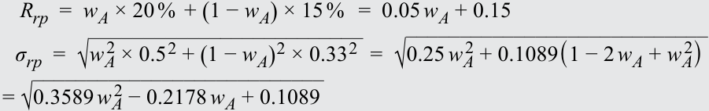
The investment opportunity set can be constructed by using different weights in the expressions for E ( Rrp ) and σ rp in Part 1 of this example. Exhibit 23 shows the combination of Assets A and B.
Tập hợp cơ hội đầu tư có thể được xây dựng bằng cách sử dụng các tỷ trọng khác nhau trong các biểu thức tính $E(R_{rp})$ và $\sigma_{rp}$ ở Phần 1 của ví dụ này. Bảng minh họa 23 thể hiện sự kết hợp của Tài sản A và B.
Exhibit 23
Bảng minh họa 23
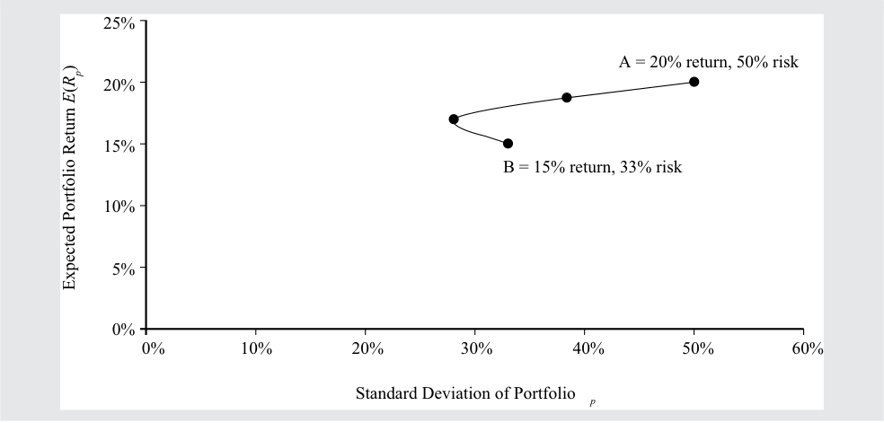
Chú thích hình ảnh: Trục hoành là Độ lệch chuẩn của danh mục đầu tư ($\sigma_p$), trục tung là Lợi nhuận kỳ vọng của danh mục đầu tư ($E(R_p)$). Đường cong nối giữa điểm $B$ (15% lợi nhuận, 33% rủi ro) và điểm $A$ (20% lợi nhuận, 50% rủi ro).
- Now introduce a risk-free asset with a return of 3 percent. Write an equation for the capital allocation line in terms of wA that will connect the riskfree asset to the portfolio of risky assets. (Hint: use the equation in Section 6 and substitute the expressions for a risky portfolio’s risk and return from Part 2 above).
- Bây giờ hãy đưa thêm một tài sản phi rủi ro có tỷ suất sinh lợi là 3% vào. Hãy viết phương trình cho đường phân bổ vốn theo $w_A$ nối kết tài sản phi rủi ro với danh mục các tài sản rủi ro. (Gợi ý: sử dụng phương trình trong Phần 6 và thay thế các biểu thức của rủi ro và lợi nhuận danh mục đầu tư rủi ro từ Phần 2 ở trên).
Solution:
Lời giải:
The equation of the line connecting the risk-free asset to the portfolio of risky assets is given below (see Section 6), where the subscript “ rp ” refers to the risky portfolio instead of “ i ,” and the subscript “ p ” refers to the new portfolio of two risky assets and one risk-free asset.
Phương trình của đường thẳng nối kết tài sản phi rủi ro với danh mục các tài sản rủi ro được cho dưới đây (xem Phần 6), trong đó chỉ số dưới “$rp$” đề cập đến danh mục đầu tư rủi ro thay vì “$i$”, và chỉ số dưới “$p$” đề cập đến danh mục đầu tư mới gồm hai tài sản rủi ro và một tài sản phi rủi ro.
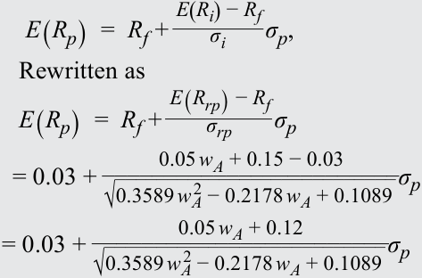
The capital allocation line is the line that has the maximum slope because it is tangent to the curve formed by portfolios of the two risky assets. Exhibit 24 shows the capital allocation line based on a risk-free asset added to the group of assets.
Đường phân bổ vốn là đường thẳng có độ dốc lớn nhất bởi vì nó tiếp xúc với đường cong được tạo thành bởi các danh mục đầu tư của hai tài sản rủi ro. Bảng minh họa 24 thể hiện đường phân bổ vốn dựa trên một tài sản phi rủi ro được thêm vào nhóm các tài sản.
Exhibit 24
Bảng minh họa 24
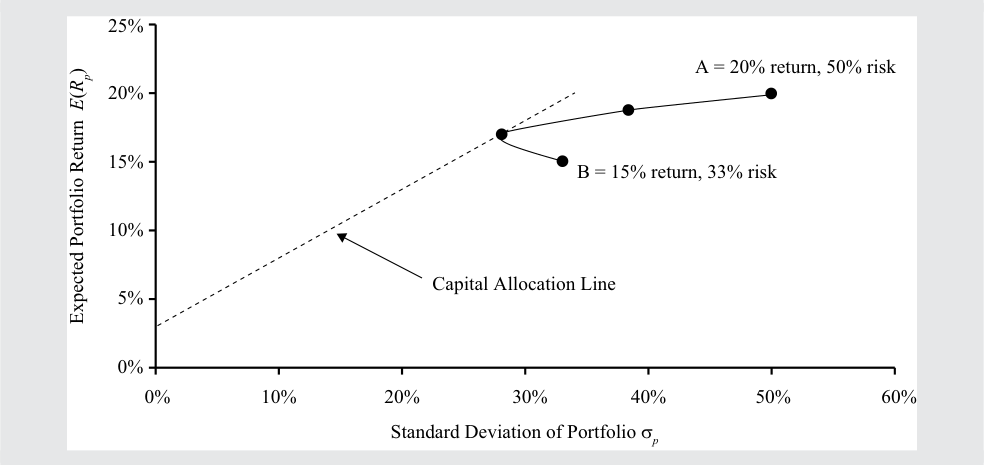
Chú thích hình ảnh: Trục hoành là Độ lệch chuẩn của danh mục đầu tư ($\sigma_p$), trục tung là Lợi nhuận kỳ vọng của danh mục đầu tư ($E(R_p)$). Đường phân bổ vốn (Capital Allocation Line) xuất phát từ 3% trên trục tung và tiếp xúc với đường cong nối giữa $B$ và $A$.
- The slope of the capital allocation line is maximized when the weight in Asset A is 38.20 percent.7 What is the equation for the capital allocation line using wA of 38.20 percent?
- Độ dốc của đường phân bổ vốn đạt giá trị cực đại khi tỷ trọng đầu tư vào Tài sản A là 38,20%.7 Phương trình của đường phân bổ vốn sử dụng $w_A$ bằng 38,20% là gì?
Solution:
Lời giải:
By substituting 38.20 percent for wA in the equation in Part 3, we get E ( Rp ) = 0.03 + 0.4978σ p as the capital allocation line.
7 You can maximize
Bằng cách thay 38,20% cho $w_A$ vào phương trình ở Phần 3, chúng ta thu được $E(R_p) = 0,03 + 0,4978 \sigma_p$ làm phương trình đường phân bổ vốn.
by taking the first derivative of the slope with respect to wA and setting it to 0.
7 Bạn có thể tối đa hóa $\frac{0,05 w_A + 0,12}{\sqrt{0,3589 w_A^2 - 0,2178 w_A + 0,1089}}$ bằng cách lấy đạo hàm bậc nhất của hệ số góc theo $w_A$ và cho nó bằng 0.
- Having created the capital allocation line, we turn to the Lohrmanns. What is the standard deviation of a portfolio that gives a 20 percent return and is on the capital allocation line? How does this portfolio compare with asset A?
- Sau khi đã tạo lập được đường phân bổ vốn, chúng ta quay lại với gia đình Lohrmann. Độ lệch chuẩn của một danh mục đầu tư mang lại mức lợi nhuận 20% và nằm trên đường phân bổ vốn là bao nhiêu? Danh mục đầu tư này so với tài sản A thì như thế nào?
Solution:
Lời giải:
Solve the equation for the capital allocation line to get the standard deviation: 0.20 = 0.03 + 0.4978σ p . σ p = 34.2%. The portfolio with a 20 percent return has the same return as Asset A but a lower standard deviation, 34.2 percent instead of 50.0 percent.
Giải phương trình đường phân bổ vốn để tìm độ lệch chuẩn: $0,20 = 0,03 + 0,4978 \sigma_p \Rightarrow \sigma_p = 34,2\%$. Danh mục đầu tư có lợi nhuận 20% này có cùng mức lợi nhuận với Tài sản A nhưng có độ lệch chuẩn thấp hơn, 34,2% thay vì 50,0%.
- What is the risk of portfolios with returns of 3 percent, 9 percent, 15 percent, and 20 percent?
- Rủi ro của các danh mục đầu tư có mức lợi nhuận 3%, 9%, 15%, và 20% là bao nhiêu?
Solution:
Lời giải:
You can find the risk of the portfolio using the equation for the capital allocation line: E ( Rp ) = 0.03 + 0.4978σ p . For a portfolio with a return of 15 percent, write 0.15 = 0.03 + 0.4978σ p . Solving for σ p gives 24.1 percent. You can similarly calculate risks of other portfolios with the given returns.
Bạn có thể tìm rủi ro của danh mục đầu tư bằng cách sử dụng phương trình đường phân bổ vốn: $E(R_p) = 0,03 + 0,4978 \sigma_p$. Đối với một danh mục đầu tư có lợi nhuận 15%, hãy viết $0,15 = 0,03 + 0,4978 \sigma_p$. Giải tìm $\sigma_p$ cho kết quả là 24,1%. Bạn có thể tính toán tương tự rủi ro của các danh mục đầu tư khác với các mức lợi nhuận đã cho.
The risk of the portfolio for a return of 3 percent is 0.0 percent, for a return of 9 percent is 12.1 percent, for a return of 15 percent is 24.1 percent, and for a return of 20 percent is 34.2 percent. The points are plotted in Exhibit 25.
Rủi ro của danh mục đầu tư ứng với mức lợi nhuận 3% là 0,0%, ứng với mức lợi nhuận 9% là 12,1%, ứng với mức lợi nhuận 15% là 24,1%, và ứng với mức lợi nhuận 20% là 34,2%. Các điểm này được vẽ trong Bảng minh họa 25.
Exhibit 25
Bảng minh họa 25
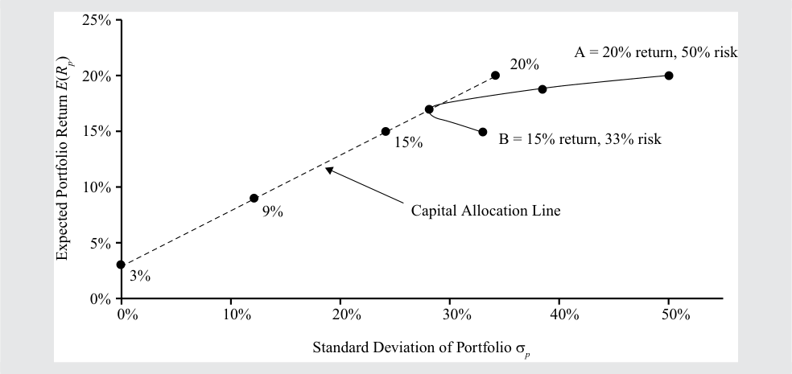
Chú thích hình ảnh: Đồ thị biểu diễn các điểm lợi nhuận 3%, 9%, 15%, và 20% nằm dọc trên Đường phân bổ vốn (Capital Allocation Line) cùng với đường biên giữa hai tài sản $B$ và $A$.
- What is the utility that the Lohrmanns derive from a portfolio with a return of 3 percent, 9 percent, 15 percent, and 20 percent? The risk aversion coefficient for the Lohrmanns is 2.5.
- Độ hữu dụng mà gia đình Lohrmann nhận được từ một danh mục đầu tư có lợi nhuận 3%, 9%, 15%, và 20% là bao nhiêu? Hệ số ngại rủi ro của gia đình Lohrmann là 2,5.
Solution:
Lời giải:
To find the utility, use the utility formula with a risk aversion coefficient of 2.5: Utility = E ( Rp ) − 0.5 × 2.5 σp2 Utility( 3%) = 0.0300 Utility( 9%) = 0.09 − 0.5 × 2.5 × 0.1212 = + 0.0717 Utility( 15%) = 0.15 − 0.5 × 2.5 × 0.2412 = + 0.0774 Utility( 20%) = 0.20 − 0.5 × 2.5 × 0.3412 = + 0.0546
Để tìm độ hữu dụng, hãy sử dụng công thức tính độ hữu dụng với hệ số ngại rủi ro bằng 2,5:
Based on the above information, the Lohrmanns choose a portfolio with a return of 15 percent and a standard deviation of 24.1 percent because it has
Dựa trên thông tin trên, gia đình Lohrmann chọn danh mục đầu tư có tỷ suất sinh lợi 15% và độ lệch chuẩn 24,1% bởi vì nó có